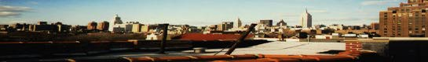

<HTML><HEAD><TITLE>For Allen Ginsberg</TITLE></HEAD>

<BODY BGCOLOR="#00002f" TEXT="#ffffff" LINK="#efef7f"
 VLINK="#dfdf7f" ALINK="#ffff7f">
<META NAME="KEYWORDS" CONTENT="Ginsberg,Beat-L,Memorial,Tribute,Online,Mailing List">
<H1>For Allen Ginsberg</H1>
 
What follows is an extract from the BEAT-L mailing list, an internet
forum dedicated to the discussion of Beat literature run by Bill Gargan 
of Brooklyn College, from the days
immediately before and after the news of Allen Ginsberg's death.  We pick 
up with the first mention of Allen's terminal illness, arriving in 
the middle of a mild, friendly flame war (as usual) discussing, 
of all things, whether Ginsberg's poem "America" was patriotic, 
unpatriotic or ambivalent.<P>

<PRE>

Date:         Wed, 2 Apr 1997 16:57:36 +0500
From:         Bil Brown <bil@ORCA.SITESONTHE.NET>
Subject:      Re: ambivalence

>Could Ginsberg's ambivalent attitude toward America be any more
>effectively than conveyed than in its articulation in "Howl"?
>"where we hug and kiss the United States under our bedsheets, the
>United States that coughs all night and won't let us sleep."
>Cordially,
>Mike Skau
>4/2/97

Just in from a VERY reliable source:

YOUR Mr. Ambivalence, Allen Ginsberg, has terminal cancer. Lets be nice to
him for a little while. ok.

Bil

</PRE><PRE>

Date:         Thu, 3 Apr 1997 12:51:52 -0800
From:         Levi Asher <brooklyn@NETCOM.COM>
Subject:      Poetry's Final Subject (fwd)

Sad news confirmed ...

> Date: Thu, 3 Apr 1997 10:59:58 -0800
> To: brooklyn@netcom.com
> From: digaman@hotwired.com (Steve Silberman)
> Subject: Poetry's Final Subject
>
> http://www.wired.com/news/topframe/2950.html
>
>  Allen Ginsberg has inoperable liver cancer, and "four to twelve months"
>  to live.
>
>
>  Beams to our teacher and friend.
>
> Love,
>
> Steve

</PRE><PRE>

Date:         Thu, 3 Apr 1997 17:45:47 EST
From:         Bill Gargan <WXGBC@CUNYVM.BITNET>
Subject:      Re: ambivalence

Allen was fond of quoting Trungpa's words on Bill Burroughs Jr. when he
was ill:"He will live or he will die.  Both are good."  I imagine Allen
is better prepared than most of us for the end.  Let's hope, however,
that the doctors are wrongin giving him only three months.  Meanwhile,
let's all give him our friendship and support in the time left for us on
earth together.

</PRE><PRE>

Date:         Fri, 4 Apr 1997 12:09:14 -0500
From:         Howard Park <Hpark4@AOL.COM>
Subject:      A Comet Dims...

Allen Ginsberg was, and is, a shining light that illuminates the world with a
relentless spirit of truth and love.  This man has spoken truth to evil in
all its forms - the evil of totalitarianism be it comminist, capitalist,
facist and every other ism or ist of our age.

As his body fails, I'm moved to reflect on the only serious discussion I ever
had with him, almost exactly a year ago.  It was about hope, joy and
optimism, qualities of beat writing which I believe are often overlooked.
 Allen never, ever, has shied away from the dark side of things in his art
but I have always felt that there was a bedrock of joy within him.  Joy so
powerful that I knew that Molach would be overcome, person by person.  It's
not the joy of escapism, thought that is part of living a full life.  Its the
joy of always being able to see the good that is all around us, within us,
the beauty of commonplace things, the beauty of the sunflower in the railroad
yard.  Whitman had this quality too, Jack Kerouac and Jerry Garcia too.

I could go on, but for me the effect of Allen - his art and simply who he is
- has simply made life more worth living.  Thank you Allen Ginsberg.

I know that death is natural, can be beautiful.  I know it on an intellectual
and perhaps a sriritual level too.  But I can't escape a feeling of deep,
deep sadness now also.  AG's performance of "Father Death" haunts me...but I
also remember his sly, knowing squint of a smile as he sang that poem the
last time I saw him do it.  I see him now, in my head, with the same
expression.  I guess he knows something that I don't.

Howard Park

</PRE><PRE>

Date:         Fri, 4 Apr 1997 12:05:53 +0000
From:         Mongo BearWolf <mongo.bearwolf@DARTMOUTH.EDU>
Subject:      Ginsberg, terminal liver cancer

Hi Folks...

The rumor we heard earlier does appear to be true.  Allen Ginsberg has
been diagnosed with terminal liver cancer.  Check out:

  http://CNN.com/SHOWBIZ/9704/04/ginsberg/index.html

This is a very sad day...  I'm kicking myself for discovering AG too
late in life, and know that now I will probably never get a chance to
see him in person.

But his work is a gift...

--Mongo

</PRE><PRE>

Date:         Fri, 4 Apr 1997 12:30:55 -0500
From:         Richard Wallner <rwallner@CAPACCESS.ORG>
Subject:      Ginsberg's cancer...

The New York Daily News today carried an article with basically the same
information.  Allen has inoperable liver cancer and less than a year to
live.  Allen's had an amazing life and I'm sure he is looking at death as
just another experience.  Maybe a plain of exsistence where he'll be
reunited with his mother, whose memories have always haunted him, and
with Neal Cassady (who he'll admit was the love of his life), and Jack
Kerouac.  From what I know of Allen, I dont think he will fear death and
will be accepting of it when it comes.

Im worried more though about Peter Orlovsky.  He is much more dependent
emotionally on Allen from what I've been told than even most spouses
are on their loved ones.  He'd certainly be either dead or institutionalized
now without Allen in his life.  I hope he can handle Allen's death.

I always hoped that before he died, Allen would have a chance to be our
national "poet laureate"  But I guess he was way to anti-establishment
for that to be realistic.  I only hope that there is a tribute organized.

His death will leave a true void.

Richard Wallner

</PRE><PRE>

Date:         Fri, 4 Apr 1997 10:50:16 -0700
From:         dawn m zarubnicky <fedex@UNM.EDU>
Subject:      Re: A Comet Dims...

Howard...

Your post was beautiful..brought tears to my eyes.  Hopefully this list
will help all of us come to terms with the impending loss a true American
hero.  My thoughts and prayers are with Allen and I take comfort in the
fact that his work will live on forever.

Dawn

</PRE><PRE>

Date:         Fri, 4 Apr 1997 10:01:01 -0800
From:         John Maynard <John_Maynard@FIRSTCLASS1.CSUBAK.EDU>
Subject:      Re: Ginsberg, terminal liver cancer

mongo.bearwolf@Dartmouth.EDU,.internet writes:
>The rumor we heard earlier does appear to be true.  Allen Ginsberg has
>been diagnosed with terminal liver cancer.  Check out:

>  http://CNN.com/SHOWBIZ/9704/04/ginsberg/index.html

CNN.COM/*************SHOWBIZ????????????**************

Says a lot about something, but I'm not sure what.

</PRE><PRE>

Date:         Fri, 4 Apr 1997 13:10:46 -600
From:         Nick Weir-Williams <nweir-w@NWU.EDU>
Subject:      news:Uny-ginsbergURnCN_7A4@clari.net

This seems to be a new update, and a very sad one>

>
> Beat poet Ginsberg's health declines
>
>         NEW YORK, April 4 (UPI) -- Beat generation poet Allen Ginsberg's
> health has seriously worsened.
>         Ginsberg's doctor says the poet suffered a stroke or other
> complication from his liver cancer overnight.
>         Before last night's setback, Ginsberg was expected to live from 4 to
> 12 months, but his doctor now says the prognosis will be changed.
>         The poet plans to stay in his Lower East Side home until he dies.
>         Ginsberg, who suffers from a long-running battle against hepatitis C
> and cirrhosis of the liver, has terminal liver cancel.
>         His doctor says Ginsberg has taken the news ``very well'' and
> characterized his response to Friday's terminal prognosis as ``studied.''
>         The poet's most famous work is ``Howl'', published in 1956, which
> claimed to be the authentic voice of the Beat generation.
>         The poem's drug-induced verse, including the famous opening line ``I
> saw the best minds of my generation destroyed by madness,'' harkened a
> new style in American poetry.
>         Critics accused Howl of being obscene for its common language and
> homosexual overtones. The poem withstood several legal challenges
> against its publication, including in the U.S. Supreme Court.
>         Ginsberg emerged as a leading figure among the Beats, a literary
> movement stemming from the 1950s underground of bebop jazz, heroin,
> Eastern mysticism and sexual liberation.

</PRE><PRE>

Date:         Fri, 4 Apr 1997 14:47:21 -0500
From:         Tony Trigilio <atrigili@LYNX.DAC.NEU.EDU>
Subject:      Re: Ginsberg's cancer...

I've been off this list for a few months now--because I forced myself
off all lists to finish my dissertation (working on a poetics of
prophecy in the industrial West, with a chapter on AG).  I keep telling
myself I'll rejoin today or the next day or the day after, but I've been
juggling too many visions and re-visions toward my late May deadline.

Then I got an email from a friend telling me about AG's liver cancer.  I
had to get back on the list.  I suspect we are going to hear the worst
kinds of remembrances from the mainstream media in the next few weeks,
as those threatened by AG's politics and sexuality take charge to try to
rewrite his history.  I had to get back to this list for a community of
folks who know better.

The news of AG's cancer is terrible.  We're losing one of the few honest
voices of human rights and free expression in this century.  Howard put
it well:

> This man has spoken truth to evil in all its forms - the evil of
> totalitarianism be it comminist, capitalist, facist and every other
> ism or ist of our age.

At least Allen has time to prepare for death, for his transition.  Not
all of us get this opportunity.  I'm sure he will use it well.

Tony Trigilio

</PRE><PRE>

Date:         Fri, 4 Apr 1997 15:26:45 EST
From:         LIBRARY CIRCULATION <breithau@KENYON.EDU>
Subject:      Re: Ginsberg's cancer...

At first I hoped the news of Ginsberg's cancer was a sick April Fools joke, but
as we all know now, it ain't. It's hard news to process, living in a
Ginsbergless world, like hearing suddenly that as of tomorrow, all the trees in
the world will be gone. It's insane and the mind rejects it. But we all knew
this day would come and so did Allen. He has worked hard all his life for so
much more than just poetry as if that was not enough, so that long after the
physical Allen Ginsberg shell is gone, what he started will remain. Damn. The
man who helped me with my mother's death back in 1986 and reconfigured how I
looked at death, is now putting us to the test. What he said to me back in '86
when my mother was in his position I will say to all of you, "...maybe this is
not a time of hardship as it is a time of great adventure?"

Well, I can try, but easier said than done.

Dave B.

</PRE><PRE>

Date:         Fri, 4 Apr 1997 15:41:06 -0500
From:         Antoine Maloney <stratis@ODYSSEE.NET>
Subject:      Re: A Comet Dims...

Dawn and everyone...

        Dawn wrote about Allen Ginsberg's work living forever. I'd like to
think about it slightly differently. Montreal recently hosted an evening at
the Centaur Theatre for the poet Irving Layton. Leonard Cohen was one of the
multitude who attended and spoke.

        He described one of his early conversations with Layton. At that
time Cohen was still involved in the family business - clothing manufacture.
Layton said to him "Leonard, teach me everything you know about clothing and
I'll teach you how to live forever!"

        Allen Ginsberg will live forever; he has known for a long time what
Layton knew and would teach Cohen.

        Your post Howard was indeed wonderful. I've already opened a
Ginsberg folder to hold all the outpouring of posts.

                Antoine

                **********************

"The sky turned black and bruised, and we had months of heavy rain."
        - Tom Waits
        
</PRE><PRE>

Date:         Fri, 4 Apr 1997 16:46:40 +0500
From:         Bil Brown <bil@ORCA.SITESONTHE.NET>
Subject:      Re: Fwd: news:Uny-ginsbergURnCN_7A4@clari.net

>>>         NEW YORK, April 4 (UPI) -- Beat generation poet Allen Ginsberg's
>>> health has seriously worsened.

What does that mean? Seriously worsened? What could it mean??? This is
something that is VERY important to me & I'm sure ALL of the Beat-Listers.
My personal connection is he has been my teacher & friend, and his
office-line has been busy since the news hit the press. Tell us what's UP!!
Please,

Bil Brown

</PRE><PRE>

Date:         Fri, 4 Apr 1997 15:35:14 -0600
From:         Matthew S Sackmann <msackma@MAILHOST.TCS.TULANE.EDU>
Subject:      AG

I love Allen Ginsberg, let that be writ in Heaven's unchangeable heart.

</PRE><PRE>

Date:         Fri, 4 Apr 1997 15:46:04 -0600
From:         Nick Weir-Williams <nweir-w@NWU.EDU>
Subject:      Re: Fwd: news:Uny-ginsbergURnCN_7A4@clari.net

I tried to post a news release to the list a few hours back - maybe it
didn't get through as I was mailing from Netscape. There was a news report
at 1.00 that AG had a serious setback overnight, perhaps a stroke, and that
the 4-12 month date had been radically altered downwards, it didn't say to
what, but it sounded awfully ominous

Nick

</PRE><PRE>

Date:         Fri, 4 Apr 1997 13:47:53 -0800
From:         Levi Asher <brooklyn@NETCOM.COM>
Subject:      Re: Fwd: news:Uny-ginsbergURnCN_7A4@clari.net

I heard this too from a different source: "he took a turn for the
worse."

I was really hoping for that 4 months ... tributes, hospital
visits, etc.  I hope we get it.

</PRE><PRE>

Date:         Fri, 4 Apr 1997 19:44:03 -0500
From:         Marie Countryman <country@SOVER.NET>
Subject:      Re: AG

there was a young and talented journalist who died very young, leaving only
a book of prose pieces, one of which i have always cherished for capturing
the soul and essence of my perception and experience of AG
and here it goes (replete with typos and lack of caps):

*making peace at the peace eye book store*
the fading strictly kosher sign, a leftover from the days when the peace
eye bookstore was a chicken market, was gone with the front window. gone
too was the pot is fun sandwich board that allen ginsberg had worn in the
first LeMar demonstrations. and the rickety old mimeograph in the back
room, which had turned out fourteen issues of *fuck you/a magazine of the
arts*, had finally been junked. it had been rough winter for the little mags.
but tuesday night, like a molting phoenix rising from the garbage at 383
east 10th street, the peace eye opened again.
perhaps one hundred peole had responded to the mimeographed invitations
sent by poet, fug, and peace ye propietor ed sanders, and came to see the
opening exhibit of literary artifacts which adorned the bookstore's
subway-tile walls. everything, sanders insisted was for sale: a six by ten
foot banner used in the shooting of sander's epic film *mongolian
clusterfuck*, ken weaver's certificate of undesirable discharge from the
air force, a framed collection of pubic hair plucked from sixteen leading
poets and two much-hearalded cold cream jars reputed to have been used by
AG. the cold cream jars went for $35 to an anonymous collector.
friends and fans and fugs wandered through the exhibit, which included all
the back issues of *fuck you* a wall of little mags from d.a. levy in
cleveland, who is now fighting obscenity charges, and the prosecution
evidence from sander's own obscentiry trial, from which he emerged
vitorious several weeks ago.
anything culd happen at the peace eye. someone brought 5 pounds of raw
hamburger in a plastic bag, to sell at a bargain price of $2. steve weber,
a folksinger and former fug, opened the bag, sniffed the hamburger, and
bbought it on the spot....
all evening firecrtackers had been exploding up and down the block. but it
wasnt until nine that the first one came through the door. sanders closed
the door, and a rain of firecrackers began. the peace eye was under siege.
a patron tried to leave. he opened the door and was driven back inside by a
hail of lady-fingers. through a crack in the door, they pleaded with the
kids. 'he's got to home. he's got to go to work' .still the explosions continued.
so AG went out  to make peace.
he ran out to the curb and began to sing mantras with great gusto, clashing
his fingerbells. the kids were dumbfounded. at first they gaped at him, but
soon began to taunt and more firecrackers flew at the poet's feet. ginsberg
kneeled in the gutter, in the grease between the parked cars, and kept
singing. the kids glared at him.
'what are you afraid of?' ginsberg asked.
'why dont you go back where you came from?' a kid demanded.
'i live on the block.' ginsberg said, and kept singing.
the exchange went on for ten minutes, ginsberg singing, kids taunting,
firecrackers exploding from every side and puerto rican families watching,
astounded, from nearby stoops. and then a kid started to sing with the poet
and ginsberg would leap to his feet, and show the kid how to hold in his
stomach, and then he was back on his knees, singing again, asking more
questions, singing 'om raksa raksa hum hum hum phat svaha!' and now the kid
was clashing the finger bells, and you could hear the mantras up and down 10th street.
after twenty minutes, the firecrackers had stopped, and ginsberg and the
kid were sitting on the stoop next to the peace eye, still singing, with a
smiling audiencethirty puerto ricans and poets passing around beer. and the
kids who had been throwing the firecrackers were inside the store sweeping
up the shrapnel.
and the peace eye was peaceful again.
from 'moving through here' by don mcneil.
mc
thinking particularly of you, levi and bill b. and others.

</PRE><PRE>

Date:         Fri, 4 Apr 1997 16:46:41 -0800
From:         Leon Tabory <letabor@CRUZIO.COM>
Comments: To: "Ginsberg's cancer..."@cruzio.com

Bill Gargan wrote:
> I'd sure like to see a push for Allen to get the Nobel prize before he dies. I
>  can't think of anyone who is more deserving.

Is there something we can do?

leon

</PRE><PRE>

Date:         Fri, 4 Apr 1997 20:52:01 -0500
From:         Pamela Beach Plymell <CVEditions@AOL.COM>
Subject:      Re: A Comet Dims...

At dinner with Allen and Burroughs last November, Allen recited lines from
Shakespeare in response to an earlier question at the symposium as to what
lines he thought greatest: "that in black ink my love may still shine
bright."
Charles Plymell

</PRE><PRE>

Date:         Fri, 4 Apr 1997 20:22:11 -0800
From:         Levi Asher <brooklyn@NETCOM.COM>
Subject:      Words for Ginzy

I think I'll collect all these reminiscenses and create
a web page ... sound okay everybody?

</PRE><PRE>

Date:         Sat, 5 Apr 1997 02:01:44 -0500
From:         Antoine Maloney <stratis@ODYSSEE.NET>
Subject:      Re: Words for Ginzy

That's definitely worth doing Levi. The Irish part of me keeps on yelling
that we should not be sounding so doom filled; that we should expect and
demand that it will all come out right for Allen, but it's getting hard to
do in the face of the news.

Recommend that anyone who has any of Allen's recorded material listen to it
- listen to his "Amazin' Grace".... he is so alive in it.

        Antoine

"The sky turned black and bruised, and we had months of heavy rain."
        - Tom Waits

</PRE><PRE>

Date:         Sat, 5 Apr 1997 12:03:16 -0500
From:         Timm <btimm@DCDU.COM>
Subject:      "Allen Ginsberg Saved My Life"

In this poem, I recorded one evening with Allen in 1993.  He really did
save my life.
It's an acrostic (the correct term?).  The title runs down the left margin.

A.L.L.E.N.  G.I.N.S.B.E.R.G.  S.A.V.E.D.  M.Y.  L.I.F.E.

By Bob Timm (originally published in Poetry New York)

A modern executive 40th-floor office
Lit by neon fruit humming tubes
Lion buddha in grey suit and tie
Even I could not detect the vision
Never a sign of his howling past

Going along 42nd Street
I think of distant highways and
Not of the immediate streets but
Suddenly he pulls out of the path of a
Bus barreling towards my thoughtful self
Ever ready for poetic graces but not
Ready for the moment when Allen
Ginsberg saved my life

Some time later we stand in line at
A Tad's Steaks ordering meat for ritual
Very raw like he said we needed
Even I could feel the snickers and stares
Directed at the crazy old man he is

My knees crack and ache in lotus form
Yet he forgets his age and folds his legs

Like an obedient faithful dog
I sip my wonton soup and wait
For the words of an ancient
East Village superstar lonely prophet

</PRE><PRE>

Date:         Sat, 5 Apr 1997 12:29:04 -0500
From:         Jeffrey Weinberg <Waterrow@AOL.COM>
Subject:      T-shirt List/Thoughts on Allen

Some thoughts on Allen Ginsberg:

Anyone who was born in the 1950s like I was realizes that
Allen has been there with us the whole way - If you were lucky enough to grow
up in the 1950s and 1960s, maybe you had an older brother or sister who kept
a copy of Fred McDarrah's "The Beat Scene" under the bed so Mom and Dad
wouldn't find it.
or there was a copy of Evergreen Review #2 (The SF Beat Issue) around the
house.
That may have been your first look at Allen.
Then Howl the trial....
Howl the Fantasy recording (on red vinyl, of course) -
and wasn't that Allen at the Summer of Love taking us with Michael Bowen and
the other organizers into the age of Aquarius?
And remember the Democratic Convention and the trial of the Chicago Seven and
Allen got up in the witness box and started to meditate and chant???
And when John Sinclair of MC-5 got busted for possession of two joints,
wasn't that Allen there helping to free John through great Free Sinclair rally?
And all those Antiwar demonstrations throughout the sixties and into the seventies,
Allen's writing continues with all the grace that God can grant a poet and
Allen circles the globe for a lifetime to teach, bring peace, to write poetry,
help found JK School of Disembodied Poetics, Naropa, chant, book signings,
TV programs, audio, video, etc. etc. and photography and awards and time to
write introductions for so many books by others to help their books sell a
few more copies and because he believed in their words: Ray Bremser (poems of Madness),
Huncke (Evening Sunurned Crimson), Kerouac (visions of Cody) and on and on -
Do not be saddened by the news about Allen. Take a good look at Bill Morgan's
massive tomes of bibliographical research: look at all that Allen Ginsberg
has written and recorded in his life. Read a biography of Allen (Barry Miles'
Ginsberg or Dharma Lion) (title is correct,I think) - and take a look at all
that one man has done in a short lifetime (oh, yeah - concerts with Peter O
and Steven Taylor around the world).
Do not be saddened now. Rejoice in that Allen gave us all so much of so many
kinds of so many things - different ways to look at politics,religion,
poetry, photography, music and on and on -
Use the life of Allen Ginsberg as inspiration. No matter whether you work the
line in Detroit or teach a college course at Harvard. We can all learn something from the
enormous span of achievements of Allen Ginsberg. No computer on this planet
has enough memory to hold all the names of every person whose life Allen
Ginsberg has touched in a positive way.
That's all -
Jeffrey
Water Row

</PRE><PRE>

Date:         Sat, 5 Apr 1997 13:11:40 -0500
From:         Bill Philibin <deadbeat@BUFFNET.NET>
Subject:      AG Dead...

Saturday April 5 11:15 AM EST

He died at 2:39 a.m. EST surrounded by family and friends,

said Morgan, his bibliographer and unofficial spokesman.

The primary cause of death was cardiopulmonary arrest with the secondary
cause cancer of the liver, he said. Funeral
services will be private.

Ginsberg suffered for many years from hepatitis C, which led to cirrhosis
of the liver that was diagnosed in 1988. The
cancer was discovered when Ginsberg, who had been suffering from severe
fatigue and jaundice, underwent a recent
biopsy.

In 1956, Ginsberg published "Howl and Other Poems," a book of free verse
considered the preeminent poetic work of
the beat movement of the 1950s.

[  deadbeat@buffnet.net - http://www.buffnet.net/~deadbeat  ]

"With all the demagoguery [today], poetry can stand
out as the one beacon of sanity: a beacon of individual clarity,
and lucidity in every direction--whether on the Internet or in coffee
houses or university forums or classrooms."
                                              -- Allen Ginsberg
                                              
</PRE><PRE>

Date:         Sat, 5 Apr 1997 13:18:29 -0500
From:         Julie Hulvey <JHulvey@AOL.COM>
Subject:      Re: A Comet Dims...

Thanks for the beautiful letter, Howard.
A year ago March 19th-ish I had a dream about Ginsberg. He mentioned he had
work for me to do, then changed the subject. When I pressed him about the
work, he acted as if I shouldn't have to ask.

Months later, I connected this dream with a Ginsberg quote I'd seen printed
 many times in the _Woodstock Journal_:

....And what's the Work?
            To ease the pain of Living
All else Drunken dumbshow.

Jul

</PRE><PRE>

Date:         Sat, 5 Apr 1997 14:26:24 -0500
From:         Liz Prato <PdXLiz@AOL.COM>
Subject:      Kaddish

Strange now to think of you, gone.......

</PRE><PRE>

Date:         Sat, 5 Apr 1997 14:40:28 -0800
From:         j thomas bailey <jabailey@VT.EDU>
Subject:      Re: T-shirt List/Thoughts on Allen

Jeffrey...
        add me to the list....(i am very sad about loss of great buddha Allen
and i will post a pome i wrote when i heard of his illness a bit
later.....)

                                j thomas bailey
                                
</PRE><PRE>

Date:         Sat, 5 Apr 1997 16:22:40 EST
From:         LIBRARY CIRCULATION <breithau@KENYON.EDU>
Subject:      Re: AG

Allen died about 2:30 am friday morning after going into a coma. There will be
private funeral services for family only this monday and a public memorial
service to be announced, later in the week. He will be cremated and his ashes
divided in three parts, one part of which will be in the family plot. More
dteails as they arrive.

Adios king,

Dave B.

</PRE><PRE>

Date:         Sat, 5 Apr 1997 16:38:53 -0500
From:         Tony Trigilio <atrigili@LYNX.DAC.NEU.EDU>
Subject:      Ginsberg Has Passed Away

I just received an email note from a friend telling me that Allen passed
away early this morning.  The world has lost one of its brightest.

Tony

========================================

"...Westward, a single breath blows across the plains, Nebraska's
        fields harvested & stubble bending delicate in evening airs
up Rockies, from Denver's Cherry Creekbed another zephyr risen,
across Pike's Peak an icy blast at sunset, Wind River peaktops
        flowing toward the Tetons,
a breath returns vast gliding grass flats cow-dotted into Jackson Hole,
        into a corner of the plains,
up the asphalt road and mud parking lot, a breeze of restless
        September, up wood stairways in the wind
into the cafeteria at Teton Village under the red tram lift
a calm breath, a silent breath, a slow breath breathes outward from
        the nostrils."
--from AG, "Mind Breaths"

========================================

"...I noticed the path downhill, noticed the crowd moving toward buses
I noticed food, lettuce salad, I noticed the Teacher was absent,
I noticed my friends, noticed our car the blue Volvo, a young boy
        held my hand
our key in the motel door, noticed a dark room, noticed a dream
and forgot, noticed oranges lemons & caviar at breakfast,
I noticed the highway, sleepiness, homework thoughts, the boy's
        nippled chest in the breeze
as the car rolled down hillsides past green woods to the water,
I noticed the houses, balconies overlooking a misted horizon,
        shore & old worn rocks in the sand
I noticed the sea, I noticed the music, I wanted to dance."
--from AG, "On Cremation of Chogyam Trungpa, Vidyadhara"

</PRE><PRE>

Date:         Sat, 5 Apr 1997 14:52:36 -0800
From:         Malcolm Lawrence <Malcolm@WOLFENET.COM>
Subject:      Kaddish

>>(in preparation):
>>
>>Hamakom yenachem etchem betoch shih-ar availay tziyon vi-yirushalayim.
>
>>"Hashem natan, veHashem lakach, yehi shem Hashem mevorach."
>>
>>Boruch dayan ha-emet.
>>
>>-
>To follow up...Ginsberg died this morning (2:39) of liver cancer and
>heart failure.

*sigh*

We lost a titan. A very gentle titan. Still, as my high school humanities
teacher said, "He had a full life." And even up until the end he was still
writing poetry and seeing friends on the last day he'd be conscious. ``He
was very energetic,'' Bill Morgan said. ``He wore himself out (Thursday)
talking to friends and writing poems.'' He wrote about a dozen short poems
on Wednesday. One of the last was titled ``On Fame and Death''; others ran
the gamut from nursery rhymes to
politics.

"The funeral will be private. In lieu of flowers, donations should be sent
to Jewel Heart Buddhist Center in Ann Arbor, Mich."

I also noticed that he died on April 5, the same day Kurt Cobain died.

I was lucky enough to see him read here in town (only once though) at the
Elliot Bay Book Company back in 94 and got him to sign my copy of "Howl"
afterwards.

For all you hard-core Dylan fans, remember the scene in Renaldo & Clara
where he and Dylan go to Kerouac's grave?

Seems strange that he should leave before Burroughs. Then again, I
personally don't believe Burroughs or Keith Richards will ever die. I mean,
if they're still alive after all they've been through already, then can't
help but live to see 100.

Sorry if I'm just babbling. I just think Allen was one of the most
necessary poets we've ever had, who had a giant heart and was
absolutely fearless.

Eliot was right..."April is the cruelest month."

*raising my glass*

Props to Allen,

Love,
Malcolm

</PRE><PRE>

Date:         Sat, 5 Apr 1997 17:42:59 -0600
From:         John Mitchell <mitchell@AUGSBURG.EDU>
Subject:      Green Automobile

Just heard (in Biermaier's B H Books on Positively 4th St.) that Ginsberg
has taken off for his ultimate ride in The Green Automobile, dispensing
lovely down & up Beat fearful & fearless words in his ecstatic wake, the
best heart of his generation stark naked raving beatifically mad finally
stopped, as the praying for the migration of his soul begins:  HOWL, in
spirit & deed.

I'm with you in Rockland
        in my dreams you walk dripping from a sea-journey on the highway
        across America in tears to the door of my cottage in the Western
        night

Amen//John Mitchell

</PRE><PRE>

Date:         Sat, 5 Apr 1997 18:44:16 -0500
From:         "Gibbons, Jeffrey x85139e1" <x85139@EXMAIL.USMA.ARMY.MIL>
Subject:      Re: AG

I hate to make this my first post on the list, but I just read on
cnn.com that Allen died this morning at 2:39 a.m.  There is an
informational article along with the announcement, as I am sure many
will follow.  Let the mourning and rememberances begin.

</PRE><PRE>

Date:         Sat, 5 Apr 1997 19:08:23 -0500
From:         Diane De Rooy <MemBabe@AOL.COM>
Subject:      Celebration of Allen Ginsberg

Revised celebration invitation
Friends, lovers, children, members of the Beat Generation private chat room
on AOL:
Allen has died. The celebration of his life goes on.

You are invited to come and share your feelings about this, read poetry and
wisdom, tell stories and jokes and live the pastpresentandfuture of Allen's
life in the bg private chatroom Sunday morning, from 10am to noon EDT (7am to
9am PDT).

We'll do the same things we did for jack on his birthday, connecting with
each other and sharing joy and sadness mixed together into that special
poignant concoction that only has the name "I'm alive..."

Shanti and shalom,

diane
</PRE><PRE>

Date:         Sat, 5 Apr 1997 19:35:57 -0800
From:         Adrien Begrand <vic.begrand@SK.SYMPATICO.CA>
Subject:      [Fwd: [Fwd: Beat Poet Laureate Ginsberg Dies]]

Date: Sat, 05 Apr 1997 16:51:49 -0500
From: Ron Whitehead <RWhiteBone@worldnet.att.net>
To: vic.begrand@sk.sympatico.ca
Subject: [Fwd: Beat Poet Laureate Ginsberg Dies]

From: bofus? <bofus@fcom.com>
To: bofus@fcom.com
Subject: Beat Poet Laureate Ginsberg Dies

April 5, 1997

Beat Poet Laureate Ginsberg Dies

NEW YORK (AP) -- Allen Ginsberg, the poet laureate of the Beat
Generation whose writing and lifestyle shaped the music, politics and
protests of the next 40 years, died this morning. He was 70.

Ginsberg died in his Lower East Side apartment at 2:39 a.m. of a heart
attack related to his terminal liver cancer, said Bill Morgan, his
friend and archivist. The poet was surrounded by family and friends.

Ginsberg suffered from chronic hepatitis for years, which eventually led
to cirrhosis of the liver. His diagnosis of terminal liver cancer was
made eight days ago and made public on Thursday. He suffered a stroke
Thursday night and slipped into a coma.

Ginsberg has spent several days in a hospice after the diagnosis, but
then decided he wanted to return home.

``He was very energetic,'' Morgan said. ``He wore himself out (Thursday)
talking to friends and writing poems.''

He wrote about a dozen short poems on Wednesday. One of the last was
titled ``On Fame and Death''; others ran the gamut from nursery rhymes
to politics.

During the McCarthy era in the 1950s, when TV's married couples slept in
separate beds, Ginsberg wrote ``Howl'' -- a profane, graphic poem that
dealt with his own homosexuality and communist upbringing.

``I saw the best minds of my generation destroyed by madness, starving
hysterical naked, '' began the seminal ``Howl.'' It was dedicated to
Carl Solomon, a patient he met during a stay in a psychiatric ward.

Ginsberg became America's most popular and recognizable poet, his
balding, bearded visage one of the enduring images of the 1950s beatnik
explosion of Jack Kerouac, William S. Burroughs and Neal Cassady. The
group, disillusioned with conventional society, created their own
subculture.

Ginsberg's acolytes comprised a who's who of pop culture: Bob Dylan,
Yoko Ono, Vaclav Havel, Patti Smith, Michael Stipe and Billy Corgan.

Irwin Allen Ginsberg was born June 3, 1926, in Newark, N.J., the second
son of poet Louis Ginsberg and his wife, Naomi. The family moved to
Paterson, N.J., while Ginsberg was a youngster.

Ginsberg intended to become a lawyer and enrolled at Columbia
University. But while still a teen-ager, he fell in with a crowd that
included Kerouac, Burroughs and Cassady -- the leaders of what became
known as the Beat Generation.

``I think it was when I ran into Kerouac and Burroughs when I was 17
that I realized I was talking through an empty skull,'' Ginsberg once
said. ``I wasn't thinking my own thoughts or saying my own thoughts.''

Ginsberg's first taste of notoriety came after the publication of
``Howl'' in 1956. Copies of the book were seized by San Francisco police
and U.S. Customs officials, and publisher Lawrence Ferlinghetti was
charged with publishing an obscene book.

Ferlinghetti was acquitted a year later, but the case generated enormous
publicity for Ginsberg and his work. Ginsberg was suddenly in demand.

One of his other great works, ``Kaddish,'' was a confessional work
dealing with his mother's life and death in a mental hospital. It was
written, stream of consciousness-style, in his Manhattan apartment,
fueled by a combination of amphetamines and morphine.

Ginsberg experimented heavily with drugs, taking LSD under the guidance
of the late Timothy Leary in the 1960s.

As he grew older, Ginsberg became a guru to the counterculture movement.
He coined the term ``flower power.'' He was arrested in 1967 for
protesting against the Vietnam War in New York, and tear-gassed a year
later while protesting at the Democratic convention in Chicago.

His National Book Award came in 1973 for ``The Fall of America: Poems of
These States, 1965-1971.'' He was a finalist for a Pulitzer Prize in
poetry in 1995 for his book, ``Cosmopolitan Greetings: Poems
1986-1992.''

Ginsberg toured with Dylan's Rolling Thunder Revue in 1977, doing
spontaneously composed blues poems. He toured Eastern Europe in 1986,
receiving an award in the former Yugoslavia, recording with a Hungarian
rock band and meeting a congress of young Polish poets.

``In the Eastern bloc, the people realize the governments are up to no
good, whereas Americans still maintain that the government is looking
after their best interest,'' Ginsberg said at the time.

Ginsberg remained vital and active well into his 60s, performing in
Manhattan nightclubs and doing poetry readings. Last year, he recorded
his poem ``The Ballad of the Skeletons'' with musical backing from Paul
McCartney and Philip Glass.

He did a video version of the poem, a pre-election political rant. At
69, Ginsberg's video appeared in heavy rotation on MTV's ``Buzz Bin.''

The funeral will be private. In lieu of flowers, donations should be
sent to Jewel Heart Buddhist Center in Ann Arbor, Mich.

</PRE><PRE>

Date:         Sat, 5 Apr 1997 21:15:29 -0500
From:         Pamela Beach Plymell <CVEditions@AOL.COM>
Subject:      Re: Ginzy

Upon hearing the news Pam and I drove up to Ginsberg's Committee on Poetry
farm to feed the birds and meditate.

COMMITTEE ON POETRY
                                April 5, 1997

Chirp, chirp, chirp
Ginzy gone
I broadcast the seeds
bread crumbs from the compost
for little animals and birds

Chirp on the phone, chirp on the radio
broadcasting them seeds
Janine left a message on the phone
I read it in chirp cyberspace

Up Lancaster St. we drove
past the bank on East Hill Road
New house where'd you come from
another house along this road

that one didn't used to be there
yet another on the way to the farm
that was the idea of a farm for poets, etc.

The great view of the Mohawk Valley
its early spring mauves and browns
old crops of gold fields stalks

Didn't take the shortcut where
Ray froze his fingers round a beer can
walking to Cherry Valley in a blizzard

Turn off the paved road
Bad hill bad ruts from spring washes
Peter needs to get that tractor
and haul some dirt and gravel

Like he usta with the manure spreader
Julius faithfully standing on the hitch
Big tractor at the corner
have to walk in here
Roads all wet, parts covered with snow

Hear the birds already
Get the bread pieces
throw a few
tie my shoe

Walk down the slushy ruts
through mud and snow
old craggily cherry tree
must be a hundred

You said the old ones were wiser
"broadcast" the bread a metaphor
when you were born, tho most had radio
more bread for the bashful birds

Stop here to rest and share
my hard bagel with the birds
hmm. that doesn't taste bad
maybe I'll eat it meself.

Hardly a sound up here in hushed forest
the snow is silent in the deer tracks
Pam says the daffodils are in bloom

I'll put some bread crumbs on the porch
not on this chair with peeling paint
Bread on the old maple tree
bread on the rock for innocent creatures

A rag is hanging on the old clothesline
and the barn door needs repair
the whole barn actually, I'll leave
some crumbs by the outhouse and
the barn and the cherry tree

On the road back a woodpecker
breaks the silence, hammering perfectly
like a Whitman carpenter
Burdock sticks like Velcro
Bread on the windowsill
bread on the rock

Old truck rusting away
new tires rotted in place
never helped anyone
get anywhere or nowhere anymore.


The air always changes on East Hill
like the atmosphere of heavens
the stars come down to
a respectable level in
case you need to chat with 'em

It is heavy now and the sun is
burning like chrome in the grey sky
the woods are mauve and brown dark green
the green and grey neglected cottage
weathers by the green and grey pound

The mountains and the sky are all blue
various shades enshrouding the Evergreens
white birch arises from moss green rock
of old hills and forests

You walked me to the boundary
twenty-nine years ago
probably talking of Whitman and Death
Now you know

                                                        CHARLES PLYMELL
                                                        CHERRY VALLEY, NY

</PRE><PRE>

Date:         Sat, 5 Apr 1997 19:01:44 -0800
From:         James Stauffer <stauffer@PACBELL.NET>
Subject:      Re: In Memorium

I can't beleive I have no Beat-L mail today unless the list died for a
day in Allan's honor.

We will all miss having him in our dimension, but there probably isn't
much to be sad about.  He lived a very fully realized 70 years.  I will
sit down tonight and dig out some good buds to fill the pipe and smoke
to Allan and read some of the old poems.  Maybe tonight he will be back
with Jack and Neal and Hunke and all the others who went on before
him--or spend some time comparing visions with William Blake.  We will
miss him.

James Stauffer

</PRE><PRE>

Date:         Sat, 5 Apr 1997 20:53:33 -0600
From:         RACE --- <race@MIDUSA.NET>
Subject:      ginsberg april 97

Ginsberg
i remember the time
i thought
i was
you
in a hospital
in Saint Joseph or Rock Island
(they run together)
and if I'd been right
instead of
psychotic
i'd be gone
and you'd still BE
and perhaps
everyone would be better off :)

david

</PRE><PRE>

Date:         Sat, 5 Apr 1997 23:05:21 -0800
From:         mwbarton <mwb201@IS5.NYU.EDU>
Subject:      allen has passed

the muses will sing elogies to a poet who will live in song and word for
longer than we.  allen ginsberg has passed.

mwbarton

</PRE><PRE>

Date:         Sun, 6 Apr 1997 00:04:54 -0800
From:         mwbarton <mwb201@IS5.NYU.EDU>
Subject:      test

test, sorry, i cannot believe silence.

mwbarton

</PRE><PRE>

Date:         Sun, 6 Apr 1997 01:01:13 EST
From:         Dylan Nomadd <zoulud@JUNO.COM>

Allen Ginsberg, forever in our hearts and eyes and quiet midnight
thoughts.
Goodnight in heaven.

</PRE><PRE>

Date:         Sun, 6 Apr 1997 00:22:51 -0600
From:         Matthew S Sackmann <msackma@MAILHOST.TCS.TULANE.EDU>
Subject:      AG

Friends,
        i just heard that Allen Ginsberg died today?  Is this true?  God,
I hope not.  Buddha, I hope not.  SOMEONE, TELL ME THIS IS NOT TRUE!!
I dont know what else to say.  It was very weird how i found out because i
was wandering N'Awlins with some friends, checking out the art galleries,
when i saw a posting for an Opne House at the new Orleans Zen Temple.
I thought hey lets see what thats all about.  We went in, and got a lovely
tour of the whole place.  And we went in the library.  I asked if they had
Dharma Bums (an attempted joke).  No, but they had lots of other JK books.
"By the way, did you know that Allen Ginsberg died today."  AHH.  I
thought for sure that someone on the list wouldve said something if he
died.  Well, i must go perform my own little tribute for Allen.  Pray for
him and meditate for him and read some of his poems.

As Ever

</PRE><PRE>

Date:         Sun, 6 Apr 1997 01:35:29 -0500
From:         Carl A Biancucci <carl@WORLD.STD.COM>

I have heard tonight that AG died on 4-5 .
Sad for many reasons,though perhaps merciful
in light of the pain he was facing.

</PRE><PRE>

Date:         Sun, 6 Apr 1997 01:42:51 -0500
From:         Ben Moore <ARoadToad@AOL.COM>
Subject:      Ginsberg death

I "took" the time to meet Allen Ginsberg last Fall, he was so gracious and
kind when talking with me.....I am so humbled by the life and person he
was........the last view I have is of him walking with snow falling toward
his hotel......I left a note for him at his hotel telling him of how his
writings had touched my life......he was so gentle, so genuine, and now he is
gone.....but he touched my life in the way only immortals can do......

</PRE><PRE>

Date:         Sun, 6 Apr 1997 01:21:26 -0600
From:         "E.j.C." <beat@SKY.NET>
Subject:      Voices...

Someone please say something.
Say anything.

-j-EnnIfEr
                
</PRE><PRE>

Date:         Sat, 5 Apr 1997 23:26:48 -0800
From:         "Timothy K. Gallaher" <gallaher@HSC.USC.EDU>
Subject:      Ginsberg Died

I am sure most of you all ready know this, I heard it on the news a bit ago.
Ginsberg did die.

Sometimes these things can go quick.  Funny how 4 to 12 months becomes two days.

I met him once.  In San Francisco in 1982 or 1981 at the On broadway, a
place above the mabuhay Gardens (a couple blocks down broadway from City
Lights).  He and Corso were giving a poetry reading.  It was around the time
of Birdbrain.  He had a band backing him.  It was called the Job.  My band
played at the On Broadway a lot, so it was normal to go there.  I was crazy
into Kerouac, so liked the whole beat scene as well.  Nobody else was really
into that back then like they are now.  I remember we got there early, me
and my buddy, our guitar player, and hung out.  I remember someone (maybe
the promoter) seeing me and being surprised and saying "what are you doing
here?" really loudly like it was the most incongruous thing in the world for
me to do.  I didn't know why it would seem so strange.

I saw Ginsberg hanging around so i went up to talk to him.  I ask him about
the band he was being backed by or something.  I certainly wasn't rude to
him, but might have acted kind of arrogant and snobbish a bit, not cause of
him but the band ( you can really say "THE JOB" facetiously).  It had the
Dead kennedys drummer and I am sure I didn't think much of it (not cause of
the drummer per se, rather that they were like serious or something).  It
seemed like Ginsberg would have liked to have talked more or siad more, but
(I don't remember well) said the thanks-a-lot-see-ya.  He seemed maybe
disapointed and kind of shrugged with a what was that all about kind of
shrug.  In reality I would have liked to have talked to him about kerouac
and how much he was influencing me and blah blah blah but that seemed a
pretty corny thing to do.

Seeing Corso and Ginsberg was a lot of fun.  Corso had like a big accordian
file and would go "a-ha" and dig through it and get a poem to read.
Ginsberg performed Birdbrain with the Job.

I also remember looking up at one time to see Tim Leary standing next to me
watching the reading.  I didn't talk to him.  Both now are dead of cancer in
the same year period.

</PRE><PRE>

Date:         Sun, 6 Apr 1997 08:21:23 -0400
From:         Marie Countryman <country@SOVER.NET>
Subject:      to allen ginsberg, still among us.

i was radically changed and charged by you, allen ginsberg, from a
distance, never having met you, and yet not from a distance, as i am
surrounded by you today, in your words which, will forever, with voice
tender, angry, challenging, loving, reminding me that the only limitations
in this world are those which i place on myself. for that, allen
ginsberg,thankyou.

allen ginsberg,
i saw you in my dreams last night,
i saw you forever electrified and leaping and bowing and praying and most
of all, i felt your  great generosity of spirit lay a blessing on me and
all others in this world.
again,
allen ginsberg, in my dreams,
i saw you walking in the supermarket with walt whitman.
allen ginsberg,
i saw you chanting ommmm in the park in the midst of the riots in chicago,
and,
upon rising,
i look out my window
i and see you in the leaves of grass, which now are rising from their long
winter sleep beneath the melting snow,
i take a walk, thinking of you,
allen ginsberg:
looking down,
i see you in all the cracks in the sidewalk.
looking up
you are in the sky.
you ARE the sky.
allen ginsberg,
this spring
i will plant sunflowers for your spirit.

allen ginsberg,
today as i mourn your death,
allen ginsberg,
i also celebrate your birth.
fare the well.
mc

</PRE><PRE>

Date:         Sun, 6 Apr 1997 08:25:46 -0400
From:         Andrew Lampert <cosmic@CLARK.NET>
Subject:      Allen Ginsberg (1926-1997)

...I receive all, I'll die of cancer,
I enter the coffin forever,
I close my eye, I disappear...

--from THE END by Ginsberg, 1960.
Published in Kaddish and Other Poems, 1958-1960
City Lights, Pocket Poet Series #14. San Francisco:1961.

A visionary, a beacon, a wizard of our oz, gone because cause and death fall
between clauses and effects. I saw this poet read one evening while I
matriculated at Bard College (early 1970s).  The sound was gentle, more
beatific then beat, if the list will permit the distinction. Of course it
was the wildness and visionary force of the Beat vortex that seduced me.
Ginsberg and his comrades, Kerouac and the still breathing Burroughs
formulated that map, you know, the one that has the five compass points:
North, South, East, West, and Center.  Allen was the very good witch of the
Center.

Safe passage Mr. Ginsberg and to all on this list...

Andrew
cosmic@clark.net

</PRE><PRE>

Date:         Sun, 6 Apr 1997 09:11:13 -0700
From:         j thomas bailey <jabailey@VT.EDU>
Subject:      pome for Allen Ginsberg pt. 1

(for some reason(damned machines) i can't send it all at once so i have
to send it in section...sorry.)
friends....
        i wrote this shortly after hearing of Allen's illness...

as sun sets on chilly april day
i am filled w/ deep down drag down
low down bring down
sorrow (even though i know that's not what you would want)
when i read the news teras welled up in my eyes
and i hurt like mad inescapable hurt
"Allen Ginsberg has inoperable liver cancer, doctors give
 him 4 to 12 months."
(right now these words ffly over AP news wires
 and by tomorrow it will fill the heads
 of millions)
i went into the bathroom to look for nail clippers
and ended up
an the floor crying
(where will the words come from when you die, Allen?
 tell me who to look to...)
 
</PRE><PRE>

Date:         Sun, 6 Apr 1997 09:11:58 -0700
From:         j thomas bailey <jabailey@VT.EDU>
Subject:      pome for Allen Ginsberg pts.2 and 3

II
i remember the first time i heard
a recording of you reading "America"
it drove me to mad me melancholia
and amazement
that a man could open his heart so wide
knowing he would be hurt
by seeing so much so hard
but your voice held strong
and broke barriers and hearts
(the hearts of we who care)
        III
when Jack went to Buddha's heaven
(and before him, Neal)
you recorded sorrow and vision
and observation
(later it became a poem
 later put in a book
 much later in my hands)
and i saw your pain
and confusion
men you loved
and spent countless hours w/
(all of you becoming saints)
were suddenly gone forever
now you are much older
and sick
they say you will be dead
within the year
and Allen i am scared
(for myself and amerika)
you and William are the last
of the three
and i don't know what the world
will be like when you go
(but i know it is better because you are here)

</PRE><PRE>

Date:         Sun, 6 Apr 1997 09:12:46 -0700
From:         j thomas bailey <jabailey@VT.EDU>
Subject:      pome for Allen Ginsberg part 4

IV
but 4 to 12 months
is long enough to do more
and feel more
and tell more and write more
and love more
and you are here
and alive evn though your body is betraying you
so i will take what i can get
and you will ready yourself to
go to Buddha's golden eternity
and know peace
(so in the end there will be joy)
        -post script-
who wil write your Kaddish, Allen?
it cannot be me
i never held you in my arms

......may Allen rest in Buddha's arms forever feeling eternal love and
gratitude from this earth...
                                j thomas bailey
                                
</PRE><PRE>

Date:         Sun, 6 Apr 1997 10:06:03 -0700
From:         j thomas bailey <jabailey@VT.EDU>
Subject:      Allen

any word on how Burroughs, Ferlinghetti, etc are doing/feeling about
Allen's death?....i saw that Corso was by his side when he passed...

                        j thomas bailey

I love Allen Ginsberg, let that be recorded in Heaven's unchangable
heart...
                                -Jack Kerouac
                                
</PRE><PRE>

Date:         Sun, 6 Apr 1997 10:29:58 -0400
From:         Antoine Maloney <stratis@ODYSSEE.NET>
Subject:      Rest in Peace...give us peace

Everyone and Marie,

        I've just read the last of the rush of forty-five posts that arrived
during the night. Marie - your beautiful writing was the last I read, but
they were all so beautiful... Jeffrey's, Tim's and Timm's - mwbarton's
plaintive "I can't believe the silence..." - Julie Hulvey, Charles Plymell,
Matt Sackman, Ben Moore, Andrew Lampert, that wonderful description of Allen
chanting with the Puerto rican kids in the midst of the firecrackers, all of
them.

        CBC's Ian Brown just finished the first hour of his Sunday morning
show with a snippet of a performance that Allen did in 1995 with the young
and wonderful Nova Scotian fiddler Ashley McIsaac at a Buddhist conference.
Allen was reciting his "Amazing Grace". Ian Brown finished by saying how
surprised he was to find that Allen was seventy. "Now that I know he was
that age, seventy sure looks a lot closer!"

        I last saw Allen Ginsberg here in Montreal when a long time friend
of Allen's at Concordia University asked Allen to come and read; part of the
Liberal Arts College series focused on arts for the public. Allen came and
the hall was absolutely packed out...and the huge vestibule area outside. My
son snuck me in and we sat with his friends, entranced, through Allen's
performance/reading/prayer meeting. One of the great pleasures of my life -
to share that with my son Liam. I will be seeing if an arrangement can be
made to show the video of the evening. It flashed through my mind how
wonderful it would be to intersperse it with reading of the posts that
everyone has been writing.

        In 1986 or '86, my wife Elizabeth went to the Pound conference in
Orono, Maine. I remember her excitement telling me on the phone who was
there - Pound's daughter and lover, McLaughlin...."I had breakfast with
Ginsberg this morning." It seems more wonderful now than it did then with
all my new-found knowledge.

        Scant memories, but wonderful.

                Antoine
                
</PRE><PRE>

Date:         Sun, 6 Apr 1997 10:57:11 -0400
From:         Perry Lindstrom <LindLitGrp@AOL.COM>
Subject:      For AG

Vortex Pedigree
(for AG)

Singularity in one being behold
the most amazing gift evaporates
before the face of the moon
held in gravity=92s oratory the libidinal
instrument we loved in him salvaged
our each episodic awareness brought
into focus generational energy with
every naked chanting the inherent good
and splendid voice emerging unshadowed
out of catastrophic idiom and mundane
drudgery kicks the unwanted school
of life=92s real voice spoken in yeses and
great kisses and great vernacular
orgasm absorbed in holistic wisdom
allegory riffs  and Buddhist symbol things
of themselves energy uniting every street
corner kid with poesy in heart sexy pilgrim
to Earth=92s ends with Blake/Whitman on lips.

Evaporates and is one now with all things
creatures/journeys/us/our own alone night
pondering on images eternal of his words
beyond words

Perry Lindstrom
Arlington VA
6 April, 1997

</PRE><PRE>

Date:         Sun, 6 Apr 1997 11:05:57 -0400
From:         "Robert H. Sapp" <rhs4@CRYSTAL.PALACE.NET>
Subject:      Re: pome for Allen Ginsberg part 4

I finished reading all the new posts on this machine, ending with j
thomas's tribute pome, and i pushed the button for the next email and
onto the screen popped the words:

No more messages

and i just stared at that until i nearly cried and thought of an obvious
interpretation. Then i thought of j thomas' question "who will write
Allen's Kaddish" and thought of everybody's posts and all the works of
others and Allen's works and thought, We all will.

Eric

Footnote to Howl

          by Allen Ginsberg

Holy! Holy! Holy! Holy! Holy! Holy! Holy! Holy! Holy! Holy! Holy! Holy!
      Holy! Holy! Holy!
The world is holy! The soul is holy! The skin is holy! The nose is holy!
      The tongue and cock and hand and asshole holy!
Everything is holy! everybody's holy! everywhere is holy! everyday is in
      eternity! Everyman's an angel!
The bum's as holy as the seraphim! the madman is holy as you my soul are
      holy!
The typewriter is holy the poem is holy the voice is holy the hearers are
      holy the ectasy is holy!
Holy Peter holy Allen holy Solomon holy Lucien holy Kerouac holy Huncke
      holy Burroughs holy Cassady holy the unknown buggered abd suffering
      beggars holy the hideous human angels!
Holy my mother in the insane asylum! Holy the cocks of the grandfathers
      of Kansas!
Holy the groaning saxophone! Holy the bop apocalypse! Holy the jazzbands
      marijuana hipsters peace peyote pipes & drums!
Holy the solitudes of skyscrapers and pavements! Holy the cafeterias filled
      with the millions! Holy the mysterious rivers of tears under the
      streets!
Holy the lone juggernaut! Holy the vast lamb of the middleclass! Holy the
      crazy shepherds of rebellion! Who digs Los Angeles IS Los Angeles!
Holy New York Holy San Fransisco Holy Peoria & Seattle Holy Paris Holy
      Tangiers Holy Moscow Holy Istanbul!
Holy time in eternity holy eternity in time holy the clocks in space holy
      the fourth dimension holy the fifth International holy the Angel in
      Moloch!
Holy the sea holy the desert holy the railroad holy locomotive holy the
      visions holy the hallucinations holy the miracles holy the eyeball
      holy the abyss!
Holy the forgiveness! mercy! charity! faith! Holy! Ours! bodies!
      suffering! magnanimity!
Holy the supernatural extra brilliant intelligent kindness of the soul!

                                                Berkeley, 1955
                                                
</PRE><PRE>

Date:         Sun, 6 Apr 1997 10:01:09 -0500
From:         RACE --- <race@MIDUSA.NET>
Subject:      ginsberg inspired poetry

ALLEN ... by David Rhaesa (race)

Allen,
i wonder
if
you can hear
these
words
where you are
or aren't
for i don't know
because
you are there
but we're all still
here
and the
meaning
is
lost
for only a moment
in the
shock
of your passing.

Allen,
never met you
never saw you read
can't even bring myself
to turn
on the
television and see how
you
are
commemorated
on
the CBS nightly news.
perhaps
you'll be amused
as i was
that
your death made the
front page
of the
Salina Journal
in
Salina Kansas
and
as i stared at
the picture
and
the words
in a Conoco station
across from
my abode
i
laughed inside
thinking
"i'll bet a dime that this
is the first time
ginsberg ever made the
front page
in this farm town" :)
and then
i stopped
laughing inside
or out
as the shock
hit me again.

Allen,
i'd heard of you
ya know
but i was just a
nerd
planning to be a lawyer
myself
until i fell
into my own
burroughseque crowd
in
hanover new hampshire
and
lincoln nebraska
and
iowa city
and
all parts
within
and
without
and i first saw
your words
in Anne's
house
and somehow
that made me feel
that she
was
safe ...
so i can blame you
and the rest
for the marriage
and the divorce
huh !?! :)
guess that would
be
silly
sometimes though
at a
time like
this
silliness is all we have
to make
sense of the nonsense
that comes
over the wires
and through
the wiring
of our collective
brains...

went digging
through boxes
of old poetry
never
published
never
burned
this morning
to see
if i could find
something
you inspired ...
found the lost poem
"Mississippi"
i wrote once on Jack's
birthday
you were in it
just so
you know

Allen,
others are in silence
and
meditation
at your passing
and
i tried that
but
my best meditation
is at a
keyboard
with my fingers
stroking
Shambhala-style
whatever
comes
from them
and my brain
is left out of the
entire enterprise.

Allen,
i'm not your generation
or you mine.
i missed it
you know
circa 1961
what kinda
generation was that
somewhere
between
Casablanca
and Tangier
i guess
grew up on
Captain Kangaroo
in
Kansas
and didn't know
kaddish
from cabbage
til
nearly
twenty-seven.
what kinda
generation is that
you
are an inspiration
you know that
but you should hear it
over and over
again and again
because
you ARE an inspiration
and you always
will BE an inspiration
to every lawyer-to-be
whose
eyes are opened
to
things beyond
the
sphere
of such limited
rationalizations...

Allen,
words
words
words
don't come easy
to
describe
the
senses
sometimes
wish
i had
your power
right now
to write
you the words
you deserve
but ...
i don't.

Allen,
i cannot accept
the
idea of you
and silence
together
for eternity
or a
moment ...
i see you
at Saint Peter's Gate
pissing on
the admission procedures
and
i think
that they would
let you
in
just for that ... :)

Allen,
i will always miss you.

love,
david

</PRE><PRE>

Date:         Sun, 6 Apr 1997 10:39:20 -0500
From:         "E.j.C." <beat@SKY.NET>
Subject:      Ginsberg memories...

The first and only time I've ever had the pleasure of meeting Allen
Ginsberg was less than a year ago. It was certainly a surprise and a treat
to hear that he would do a reading at a bookstore in town since he was
already here for his good friend Burrough's art exhibit opening. The
cozy corner where we all sat in wait for Ginsberg grew bigger and bigger
as people began standing on chairs behind bookshelves and sitting on
bookshelves... the faces of the old and the young all looked eagerly for
his figure. I wondered if that's how it must've felt in those gone days of
cafe, studio, anyplace to sit stand, readings... Ginsberg appeared and sat
at the podium.  Making adjustments adjusting the kind lady who worked for
The Establishment and didn't know how to fix the distortion on the
Establishment bought system. He read and he sang, he made us laugh.
Afterwards, he promised he'd sign every one of us, everything. As the
tension became apparent on the faces of those in line who couldn't wait,
wouldn't wait, my turn came. "Are you buddhist?" he asked. "No," I said.
Now I think perhaps I should've explained... He smiled and signed and I
looked at him in awe because, I thought, he looks so peaceful and calm for
having to sign books for over a hundred aggravated faces.
I had to return to my work from which my boss had granted me two and a
half hours leave so that I may meet the man who introduced me to the beats
when I was a lonely high school freshman reading from great books of CIA
Dope and Dont Smoke.

We'll all miss him. His close friends and those his works are close to.

-j-EnnIfEr c.

</PRE><PRE>

Date:         Sun, 6 Apr 1997 10:40:59 -0500
From:         RACE --- <race@MIDUSA.NET>
Subject:      HE

HE by l.f.

He is one of the prophets come back
He is one of the wiggy prophets come back
He had a beard in the Old Testament
        but shaved it off in Paterson
He has a microphone around his neck
        at a poetry reading
        and he is more than one poet
        and he is an old man perpetually writing a poem
        about an old man
        whose every third thought is Death
        and who is writing a poem
        about an old man
        whose every third thought is Death
        and who is writing a poem
        Like the picture on a Quaker Oats box
        that shows a figure holding up a box
        upon which is a picture of a figure
        holding up a box
        and the figure smaller and smaller
        and further away each time
        a picture of shrinking reality itself
He is one of the prophets come back
        to see to hear to file a revised report
        on the present state
        of the shrinking world
He has buttonhooks in his eyes
        with which he fastens on
        to every foot of existence
        and onto every shoestring rumor
        of the nature of reality
        And his eye fixes itself
        on every stray person or thing
        and waits for it to move
        like a cat with a dead white mouse
        suspecting it of hiding
        some small clew to existence
        and he waits gently
        for it to reveal itself
        or herself or himself
        and he is gentle as the lamb of God
        made into mad cutlets
        And he picks up every suspicious object
        and he picks up every person or thing
        examining it and shaking it
        like a white mouse with a piece of string
        who thinks the thing is alive
        and shakes it to speak
        and shakes it alive
        and shakes it to speak
He is a cat who creeps at night
        and sleeps his buddhahood in the violet hour
        and listens for the sound of three hands about to clap
        and reads the script of his brainpan
        his heiroglyph of existence
He is a talking asshole on a stick
        he is a walkie-talkie on two legs
        and he holds his phone to his ear
        and he holds his phone to his mouth
        and hears DEATH DEATH
He has one head with one tongue hung
        in the back of his mouth
        and he speaks with an animal tongue
        and man has devised a language
        that no other animal understands
        and his tongue sees and his tongue speaks
        and his own ear hears what is said
        and clings to his head
        and hears DEATH DEATH
        and he has a tongue to say it
        that no other animal understands
He is a forked root walking
        with a knot-hole eye in the middle of his head
        and his eye turns outward and inward
        and sees and is mad
        and is mad and sees
And he is the mad eye of the fourth person singular
        of which nobody speaks
        and he is the voice of the fourth person singular
        in which noboby speaks
        and which yet exists
        with a long head and a foolscap face
        and the long mad hair of death
        of which nobody speaks
And he speaks of himself and he speaks of the dead
        of his dead mother and his Aunt Rose
        with their long hair and their long nails
        that grow and grow
        and they come back in his speech without a manicure
And he has come back with his black hair
        and his black eye and his black shoes
        and the big black book of his report
And he is a big black bird with one foot raised
        to hear the sound of life reveal itself
        on the shell of his sensorium
        and he speaks to sing to get out of his skin
        and he pecks with his tongue on the shell of it
        and he knocks with his eye on the shell
        and sees LIGHT LIGHT and hears DEATH DEATH
        of which nobody speaks
For he is a head with a head's vision
        and his is the lizard's look
        and his unbuttoned vision is the door
        in which he stands and waits and hears
        the hand that knocks and claps and claps and knocks
        his DEATH DEATH
For he is his own ecstatic illumination
        and he is his own hallucination
        and he is his own shrinker
        and his eye turns in the shrinking head of the world
        and hears his organ speak DEATH DEATH
        a deaf music
For he has come at the end of the world
        and he is the flippy flesh made word
        and he speaks the word he hears in his flesh
        and the word is DEATH
        
</PRE><PRE>

Date:         Sun, 6 Apr 1997 08:56:42 -0700
From:         Leon Tabory <letabor@CRUZIO.COM>

Levi Asher wrote:
> I think I'll collect all these reminiscenses and create
> a web page ... sound okay everybody?

Being an everybody myself too, I thought it would not be polite to
ignore your request, so I thought I should find out more about you now.
Been meaning to for some time. Yesterday morning about 7 am I went to
visit you at the unfashionable Flushing. Ended up hanging around all
morning. So glad to make your aquaintance. And now that I know you I am
so glad you are moving in another budhist neighbor into your
neighborhood. Maybe your in-laws will approve already also. I hope so.
But then Allan is going to keep on talking to all of us. Them too.
Veimroo Omein

leon

</PRE><PRE>

Date:         Sun, 6 Apr 1997 09:47:07 -0700
From:         Leon Tabory <letabor@CRUZIO.COM>
Subject:      Addendom to[Fwd: Re: Words for Ginzy]

Maybe I should clarify to yo all:

Vayeemroo OMein

Is the hebrew ending of the prayer for the dead called "Kaddish".

It means;

And say (second person plural) Ohmein.

Whereupon everyone in attendance is expected to respond with

OHMEIN (The old ashkenazic pronounciation of Amen)

Thought you would like to know.

Leon

</PRE><PRE>

Date:         Sun, 6 Apr 1997 18:49:36 +0200
From:         Rinaldo Rasa <rinaldo@GPNET.IT>
Subject:      Allen Ginsberg ricordato dai poeti Mario Luzi e Andrea Zanzotto.

Allen Ginsberg & Italian Poets Mario Luzi & Andrea Zanzotto.

snipped from newspaper "la Repubblica" - domenica 6 aprile 1997,
article written by Francesco Erbani.

Mario Luzi e Andrea Zanzotto sono due poeti molto distanti
da Ginsberg, nel modo di versificare e nei mondi poetici che
esprimono. Eppure nel protagonista della Beat Generation
entrambi sentono il suono di una delle voci piu' acute di
questo secolo.

MARIO LUZI:
"Il suo e' un verso molto americano, nel senso che costruisce
insieme alla passione che esprime" - spiega Luzi. I suoi versi
non celebrano, non evocano. La loro forza d'urto, a parte certi
ripiegamenti retorici, si condensa in forme nevrotiche, lacerate.
Queste forme spesso sono convogliate efficacemente, ma rappresentano
un modo di vita che per lui come per Ferlinghetti o Corso, era
il modo della vita".
Luzi che ha conosciuto Corso a Firenze e Ferlinghetti a San Francisco,
nella sua libreria, non ha mai incontrato Ginsberg. "Ho iniziato a
leggerlo a meta' degli anni Sessanta quando venne tradotto "Jukebox
all'Idrogeno". Mi colpi' la profondit=E0 originaria che avevano le sue
parole, una caratteristica che non aveva nulla di sacro. Era violenta,
anche urtante. Ebbi la impressione di un poeta che prediligeva la corda
del profetico. Le cose che diceva voleva fossero recepite, sperava che
fruttificassero. Era un poeta che rifiutava la glossolalia, il parlarsi
addosso, una delle tare della poesia moderna".

ANDREA ZANZOTTO:
"Lo ho visto due anni fa, e' venuto a Conegliano Veneto dove avevamo
organizzato una festa per Fernanda Pivano", racconta Zanzotto. "Lo trovai
cambiato nell'aspetto. Lo ricordavo un omaccione, allora invece mi sembro'
esile, aveva una aria da intellettuale. Ma dentro era rimasto lo
stesso. A un certo punto della serata comincio' a cantare. Nessuno se
non lui avrebbe manifestato tanta liberta'. Eravamo in un teatrino di
provincia e lui aveva una voce meravigliosa".
La memoria del poeta veneto risale all'indietro, si volge alla fine degli
anni Settanta. "Lo conobbi a Cambridge, ero insieme alla Pivano.
Mi sembr=F2 un uomo in continua eruzione. La sua vitalit=E0 era
 straordinaria,
a volte scivolava nella ingenuit=E0. Non metteva in mostra nulla, era
 lontana
da lui qualunque forma di sotterfugio letterario. Possedeva un fortissimo
senso della protesta, ma ogni cosa riusciva a piegarla dentro il contenitore
poetico".
Anche Zanzotto come Luzi e' poeta diverso da Ginsberg.
 "Eppure riconosco nella mia poesia una certa complemantarieta' alla sua.
Io ero qui in Italia dove non si poteva scrivere che in modo compresso e
depresso. Lui viveva nella liberta'. Ma in un certo senso rappresentava
un'altra porzione di un mondo poetico comune. Una volta, non ricordo bene
quando, per difenderlo dalle accuse di oscenita' fu costretto ad alzare la
voce anche Giuseppe Ungaretti".
 In realta' un filo lega Ginsberg e Zanzotto. "Anche lui come me, viveva
sovrastato dall'incubo della catastrofe nucleare: mi sentivo vicino a
Ginsberg quando prorompeva nell'urlo contro le mostruosita' che la storia
preparava".
---

[my translation]
Mario Luzi and Andrea Zanzotto are two very aloof poets
from Ginsberg, in the way of versify and in the poetic worlds that
they express. Yet in the protagonist of the Beat Generation
both feels the sound of an of the more acute voices than
this century.
 "The his is a toward much American, in the sense that builds
together to the passion that expresses"- he explains Luzi. His verses don't
celebrate, they don't evoke. Their force of bump, to part some declamatory
refoldings, is condensed in forms, you lacerate. These forms are thick
effectively, but they represent a way of life that for him like for
Ferlinghetti or Corso, it was the way of the life." Luzi that has known
Corso in Florence and Ferlinghetti in San Francisco, in his bookstore, he
has not met Ginsberg ever.
  "I have begun to read it to half of the Sixties when translated The
Hydrogen Jukebox. He struck me the original depth that they had his words, a
characteristic that nothing didn't have of sacred.  I had the impression of
a poet that affected the chord of the foreseeing.  A poet was that speaks
clearly"

 "I have seen two years he  come to Conegliano Veneto where we had
organized a party for Fernanda Pivano," he tell Zanzotto. 
"he found changed in the appearance. I remembered a big man,
then instead seemed me reedy, he had an air from intellectual.
But inside he had stayed the same. He to a certain point of the evening
began to sing. No if not he would have manifested so much liberty.
We were in a theatre of province and he had a marvelous voice.
" The memory of the venetian poet goes up again to the back,
he turns at the end of the 70s. 
"I knew it in Cambridge, I was together to the Pivano.
A man in continual eruption seemed me. His vitality extraordinary, he at
times slipped in the ingenuity. He didn't put in invalid show,
distant era from him any form of literary subterfuge. He possessed a
strong sense of the protest, but each thing was able to fold up it inside
the poetic container.
" Also Zanzotto like Luzi is poet diverged from Ginsberg. 
"Yet I recognize a certain complmentary to the his in my poetry.
I was here in Italy where it could not be written that in pressed and
depressed way. He lived in the liberty. But he in a certain sense
represented an other portion of a poetic common world.
Once, I don't remember well when, for defend it from the accusations of
obscenity were constrained to lift the voice also Giuseppe Ungaretti.

In reality a thread ties Ginsberg and Zanzotto.

 "Also he like I, lived impended from the nightmare of the nuclear
catastrophe: I felt near to Ginsberg when break out in the howl against the
monstrosities that the history coached."

yrs
Rinaldo.

</PRE><PRE>

Date:         Sun, 6 Apr 1997 11:49:05 -0600
From:         "Derek A. Beaulieu" <dabeauli@FREENET.CALGARY.AB.CA>
Subject:      Re: Addendom to[Fwd: Re: Words for Ginzy]

ohmein.
om.
ah.
aha.
amen.

thank you leon.
derek

</PRE><PRE>

Date:         Sun, 6 Apr 1997 14:03:03 -0400
From:         "Paul McDonald, TeleReference LA, Main Info Services"
              <PAUL@LOUISVILLE.LIB.KY.US>
Subject:      Thoughts on Ginsberg

I have been so sad over the last two days.  Bil Brown told me early Friday
Evening that he spoke with Anne Waldman who related Allen's stroke.  Then I
read the Reuters Announcement.  Dug up a copy of "Father Death Blues" and
cried last night.  Working on a poem and and recollections of three personal
encounters with Ginsberg that I will post it later.

Ginsberg wrote something in an essay, NEGATIVE CAPABILITY:  KEROUAC'S BUDDHIST
ETHIC, where he related the Four Noble Truths and the Eightfold Path,
eventually leading to a place where one "...exists with no creditials and no
apologies, anymore than the sun has to apologize."  What a wonderful way to
live!

I'd like to share something very personal.  Today, April 6, marks my seven
year anniversary of sobriety, that is, being drug and alcohol free.
Ginsberg's poetry has carried an inner metric pulse that resonates with my
soul.  A pulse I was completely unaware of during the thick of my active
alcoholism/addiction and has carried me this far, and probably farther if I
choose, through the spirtual journey that the craving for addiction gives way
to when those of us with the disease choose to live differently.

Thank you Father Ginsberg, now reunited with Jack, Neal, Louis, Naomi, Trungpa
Rimproche, Whitman, Blake, Rumi and Milarepa, for inspiring us to sing this
blues.

Om Namah Shivaya

Paul McDonald

</PRE><PRE>

Date:         Sun, 6 Apr 1997 13:54:18 -0400
From:         don't forget the alcohol <HOMZADM@HIRAM.EDU>
Subject:      Allen

I'm only 21 years old, and the first time I ever heard of Jack Kerouac was
because his name was in a Hi & Lois comic strip; the first time I ever heard
of Allen Gisnberg (that I consciously remember) I was in a car while a high
schooler, and Allen was giving a reading somewhere in Cleveland and was a
guest on the radio station's morning show.  I'm not sure how I first became
aware of the Beats, never read them in my high school classes, I don't think
they were even covered in any of my college classes.  But I had this fuzzy
idea of what they were (the goatess and the black and the social rebellion
thing), & I remebered the title of the book mentioned in that comic strip,
_On the Road_, and so i started reading it this past summer, and was so proud
of myself becuase I finished it & I even liked it, while my freind who was
also reading it kept proclaiming how appauled she was by the characters and
she refused to finish the book even though she only had 2 chapters to go.
How sad.  And then I had to pick a topic for my senior seminar paper for my
English major, so i decided to write about these Beats.  And after 12 weeks of
research and writing I was still fascinated by this group of writers, and am
sorry that Allen had to leave just as I had gotten my foot in teh door.  One
more reason to keep his vision alive.  All the poems and memories that have
been posted, they've brought tears to my eyes, and I want to thank you all for
sharing.

Diane.

</PRE><PRE>

Date:         Sun, 6 Apr 1997 15:05:07 -0400
From:         "Robert H. Sapp" <rhs4@CRYSTAL.PALACE.NET>
Subject:      Poem dedicated to Allen Ginsberg

Daylight Savings Time Begins

i'm shivering
Allen
for you your life
your passing
and the passing of the World
in time
so sudden
like stepping into the freezer
section of a grocery store
from the produce section

the buds are starting to appear
in full expression outside
on the tree across from my yard
the neighbor's tree with the wide
base of expanding branches
it survived the freak blizzard
whose heavy snow brought in April
and whose placid white glow did
belie the elsewhere wreckage when
one stared at it the right way

that tree that i've gazed at
many times from the front window
survived
unlike the Japanese cherry tree
that lived just outside my bedroom
its branches always reaching out
further each year toward my
window as i ignored its presence
now
it hangs over bare
broken exposing orangey wood
the weight of the snow
that melted easily in few days
left behind this weak grey
remnant now tilting toward
the car that rots in the sinking
driveway instead of my window

the sun is smiling
somewhere
and looking up at the sky through
the screen
makes you neglect the screen
and you see the blue blend
softly with the tall oak
branches and the difference is
the sea and sea water sleeping
together
easing

yes Allen
there is warmth within me still
a golden warmth
and so perhaps i'd better go
outside to sing
forever
instead of sitting here
lying there
crying in the house

on the shiny brown
desktop rests vividly
your Collected Poems it was
laying face down before
i turned face up
over across an array of
other books i see a
biography on the cover
of which i see your
picture bearded bespectacled
your eyes do the grinning
i borrowed that book
from a kind teacher
months ago
i read with awe a great
deal of it yet was
distracted by the ton
of other things happening
so i never got to read
the whole story but i guess
no one ever does

we will finish it
together

Eric Sapp
                                        April 6, 1997
                                        
</PRE><PRE>

Date:         Sun, 6 Apr 1997 13:52:30 -0600
From:         dawn m zarubnicky <fedex@UNM.EDU>
Subject:      ALLEN

I'm certain Mark wouldn't mind me posting this beautiful poem off the Vin
Scelsa List to the Beat-L.  For those of you fortunate enough to be in
the New York listening area, I'm certain Vin will do a fitting tribute to
Allen on his radio show this evening.  I would be eternally grateful if
someone could record it for me.

Peace Allen....

---------- Forwarded message ----------
Date: Sun, 6 Apr 97 09:07:52 EDT
From: Digestifier <Idiots-Delight-Request@netcom.com>
To: IDD-Distribution@netcom.com
Subject: Idiots Delight Digest #53

Idiots Delight Digest #53, Volume #3              Sun, 6 Apr 97 09:07:52 EDT

From: Kiddrane@aol.com
Subject: The Silent Wind
Date: Sat, 5 Apr 1997 23:22:52 -0500 (EST)

The Wind seems silent
When A poet dies
The Wind stands still
As the sky cries

Accepting the call
To take words
And make them speak
Across boundries

The silent wind
Breathes fire into the jazz filled spectrum
That clucthes onto the saxophone's wisdom
Blow man blow

The silent wind
Touches down on the sweeping willow
Catch that cool dude man go
Higher man higher

The silent wind
Baptizing the original sinned
Bepop bosanova whistle man whistle
Follow that train down the tracks

The silent wind
Be howl(ing) every thing
Like a Plato echo
Reaching far off in to universal language

The silent wind
Madi Gras time
We be two stepping ourselves
Straight up in to a rondevous with Jesus

Hey Jack step aside
I gots me a midnight ride
Been hitchhiking to this place
All the live long day

Takes a train to cry
Takes a silent wind to whisper good bye
Yeah cool man dude go
Step aside I'm doing this show

The silent wind
Hell, howl(ing)my ass off
Passing by on that midight special
You outta see ole cool man dude go

Just about in time for the NY Times
Front Page Obituary News
Yeah that cool man dude go
Cool Man Dude Da Ron Ron Ron
Go Go Go -- Yeah.

for Allen Ginsberg 4/4/97

</PRE><PRE>

Date:         Sun, 6 Apr 1997 13:49:24 -0700
From:         Adrien Begrand <vic.begrand@SK.SYMPATICO.CA>
Subject:      Death News

What a week it's been.
A strange strange month for myself,
reaquainting myself with Allen's poesy
reading Dharma Lion Collected Poems
listening to Holy Soul Jelly Roll,
hearing his beautiful Kaddish
watching his Life And Times
delighting most in what he called his
"little spontaneous word firecrackers":

"A naked lunch is natural to us,
     we eat reality sandwiches.
But allegories are so much lettuce.
     Don't hide the madness."

"who sank all night in submarine light of Bickford's floated out and sat
       through the stale beer afternoon in desolate Fugazzi's, listening
to the
       crack of doom on the hydrogen jukebox..."

"Holy the supernatural extra brilliant intelligent kindness of the
soul!"

"I have the moan of doves and the feather of ecstasy..."

"I am the King of May, which is industry in eloquence and action in
amour..."

Oh, far too many to mention.

A few days ago I read about his amazing 1965:
visited Cuba
pissed people off, was deported
visited Moscow
pissed people off, barely escaped unscathed
visited Prague, welcomed as a returning hero
elected King of May by 100,000 people
held his title for a mere few hours
followed by plainclothes cops
assaulted on the street
had notebook stolen
and finally booted to London, wrote Kral Majales on the plane
landed in London in time to meet Dylan
filmed Don't Look Back
leaped in John Lennon's lap
organized Albert Hall poetry reading
wrote Who Be Kind To
and upon returning to New York was strip searched
cos Hoover was scared shitless of him
and the year was barely half over.

Read the story grinning,
amazed how such a gentle man who  never hit anybody
could be so feared by authorities.
Feared cos he told the truth,
his whole life was about telling the truth,
being true to himself
true to his friends
and refusing to be duped by the Gov't Machine of Moloch

Then read Allen was sick, had been for days.
Couldn't believe it at first, but more and more rumours and finally
reports came in.
I thought his few months would be incredible,
with endless tributes
a celebration of his life's work.
So I returned to his poetry now with renewed fervor.

Next day, received a bundle of posters, among them
Allen's poem "Visiting Father and Friends"
his dream of seeing Neal again
and crashing at his father's new place,
and Jack's "Daydreams for Ginsberg"
spontaneous thoughts from the man who taught Allen
how to create a mainline straight from the heart to the paper.

The timing of everything becoming scary.

Then rumours of his condition worsening.
Thought nothing of it, actually.
Kept reading.

Spent a quiet Saturday at home,
upon checking e-mails noticed none from beat-l.
Silence.
Thought nothing of it, kept reading.

Took a break from reading to fulfill civic duty as Canadian
watching Sat. night hockey.
Went to check e-mail after first period,
only to find a lone post from Ron Whitehead:
"Beat Poet Laureate Ginsberg Dies"

Jaw dropped.
Sighed, read the letter,
instantly forwarded it to the mailing list thinking
"Why hasn't anyone mentioned this?"
Searched the internet for more news, heard words from his friends,
including a short tribute from Ferlinghetti

Still didn't know what to think of all this,
saddened knowing I'd never hear him read in public,
the closest I had gotten to him was on an irc chat,
knowing there'd be no more new works from him,
but realized in the end that's all selfishness.

Listened to and read his poetry all night,
Pacific High Studio Mantras sounding more powerful than ever,
ending with Ashes & Blues cd playing at four in the morning
reality finally starting to sink in,
Gospel Noble Truths ("Die when you die")
On Neal's Ashes
Father Death Blues
After Lalon ("Don't follow my path to extinction")

Then silence
Eyes glazed over, but
no tears

Today the e-mail caught up with me,
sixty letters, many beautiful tributes among them.

Still couldn't quite articulate my thoughts,
but decided to write anyway

Thought of Allen's mercurial final days and was reminded of Jack's
famous line:

the ones who never yawn or never say a commonplace thing, but burn,
burn, burn like fabulous yellow oman candles exploding like spiders
across the stars and in the middle you see the blue centerlight pop and
everybody goes

                                          AH!

Allen, I like to think of you being welcomed into the afterlife
by yr waiting mother Naomi,
Louis smiling, anxious to carry on yr existential discussions
now that you both know what's on the other side,
Mrs. Kerouac politely saying hi but still with that disapproving look in
her eyes,
and in the distance two figures, both looking youthful again,
in front of a green auto,
no tea, no tokay this time
("who needs it here, natural eyeball kicks, dig?")
waiting for you to join them on the ultimate Road.

Thank you Allen, for everything.

"He isn't dead
as the many pages of words arranged thrill
with his intonations the mouths of meek kids
becoming subtle even in Bengal. Thus
there's a life moving out of his pages...
Mourn O Ye Angels of the Left Wing! that the poet
of the streets is a skeleton under the pavement now
and there's no other old soul so kind and meek
and feminine jawed and him-eyed can see you
What you wanted to be among the bastards out there."

AG
Benares, March 20, 1963

Adios, Kral Majales.

Adrien Begrand
Hudson Bay, Sask., April 5-6, 1997

</PRE><PRE>

Date:         Sun, 6 Apr 1997 16:00:15 -0400
From:         Richard Wallner <rwallner@CAPACCESS.ORG>
Subject:      Ginsberg memorial

According to the New York Post, there is a memorial tomorrow morning for
Allen Ginsberg at a buddhist center near where he lived.  If anyone has
any info on other memorials please post...

Allen was a visionary and will be missed...

Neal Cassady (1928-1968)
Jack Kerouac (1928-1969)
Allen Ginsberg (1927-1997)

*sigh*

</PRE><PRE>

Date:         Sun, 6 Apr 1997 15:57:07 -0400
From:         Laura Michelle Stipancich <lms@SYLVANIA.SEV.ORG>
Subject:      mIRC Anyone?

Greetings-

This is my first post to the list.  I only wish I had discovered this
earlier; however it is making Allen's death a bit easier to swallow.

I use mIRC Version 4.0 as my internet chat server-thing.  You can
download a copy from the Internet (URL Attached!).  It's fairly
user-friendly.  Perhaps we can set up a channel in there and hang out.

Peace, Love, and Dharma

Laura

</PRE><PRE>

Date:         Sun, 6 Apr 1997 16:04:02 -0400
From:         Marie Countryman <country@SOVER.NET>
Subject:      Re: Addendom to[Fwd: Re: Words for Ginzy]

>ohmein.
>om.
>ah.
>aha.
>amen.
>
>thank you leon.
>derek

@@@@@@@@@@
could someone please repost leon's? somehow it did not get to me.
thanks
mc

</PRE><PRE>

Date:         Sun, 6 Apr 1997 16:18:02 -0400
From:         Richard Wallner <rwallner@CAPACCESS.ORG>
Subject:      Ginsberg remembered..

In reading the obituaries, I dont think enough has been said about how
large a role Allen played in the rise of beat literature.  Allen was in
addition to everything else, for many years the literary agent for both
Jack Kerouac and William Burroughs.  Allen carried "On the Road" and
"Naked Lunch" and "Junky" door to door and was ceaselessly energetic in
promoting his friends careers.  In fact, it was Allen whose connections
first got Kerouac published...he showed "Night and the City" the right
people and got Jack in the door at Random House.

It is likely that these great works may never have seen the light of day
without Allen Ginsberg's energy and belief in his friends.  Allen
Ginsberg was the driving force behind the beat generation.

</PRE><PRE>

Date:         Sun, 6 Apr 1997 16:33:04 EST5EDT
From:         SGA_President <sgapres@CARPET.DALTON.PEACHNET.EDU>
Subject:      allen

It's no secret that Allen was considered the greatest American poet
since Walt Whitman and also the greatest icon in twentieth century
literature altogether.  In honor of such a great and peaceful man, I have
decided to dedicate the literary quarterly at my college in his
memory. If anyone has any suggestions of what I should say, please
let me know.
Thanks,
Stephen D. Brindle
sgapres@carpet.dalton.peachnet.edu

</PRE><PRE>

Date:         Sun, 6 Apr 1997 17:41:57 -0400
From:         Ginny Browne <NICO88@AOL.COM>
Subject:      AG Gone

Meditation On The Death of Allen Ginsberg

Planets and spirits-
Bodhisattva has risen,
petals left for us

i wade, hesitant,
through the calm
                after the storm.

</PRE><PRE>

Date:         Sun, 6 Apr 1997 18:07:22 -0400
From:         "M. Cakebread" <cake@IONLINE.NET>
Subject:      Dylan dedicates "Desolation Row" to Ginsberg in Moncton, N.B.

Last night (4/05/97) in Moncton, New Brunswick, Bob Dylan
dedicated "Desolation Row" to Ginsberg.

Mike

</PRE><PRE>

Date:         Sun, 6 Apr 1997 18:09:02 -0400
From:         "Christopher L. Jones" <chrisj@REN.OIT.UMASS.EDU>
Subject:      Ginsberg Reminiscence

I had the honor of seeing Allen speak last March, here in Amherst.  Myself
and two friends huddled in the freezing cold in order to get front row
seats.  It was truly amazing.  He opened by singing Blake's Tiger, Tiger,
and read a lot of poems from Cosmopolitan Greetings.  It came as a complete
shock when, towards the end of the performance, he pulled out a copy of
Howl, and began to read it.  He had to stop frequently, to take a sip of
water or clear his throat, but he read it with such passion, it was almost
a spiritual experience.  It was as if everyone else in the auditorium had
dissolved, leaving only the words themselves, resounding through the air.
He closed by singing Father Death Blues, and as this small figure shuffled
out of the spotlight and into the shadows at the wing of the stage, my
friend and I were overcome by the feeling that his time was drawing to a
close.  Unfortunately, it appears that the premonition has come true.  I
only wish that I could have said something meaningful to him as I stood in
line to have my copy of Kaddish autographed...Something to convey the
respect and admiration I had for him.  Now, it's too late.  Adios, King.

211th Chorus

The wheel of the quivering meat
                         conception
Turns in the void expelling human beings,
Pigs, turtles, frogs, insects, nits,
Mice, lice, lizards, rats, roan
Racinghorses, poxy bucolic pigtics,
Horrible unnameable lice of vultures,
Murderous attacking dog-armies
of Africa, Rhinos roaming in the
                         jungle,
Vast boars and huge gigantic bull
Elephants, rams, eagles, condors,
Pones and Porcupines and Pills --
All the endless conception of living
                              beings
Gnashing everywhere in Consciousness
Throughout the ten directions of space
Occupying all the quarters in & out,
>From supermicroscopic no-bug
To huge Galaxy Lightyear Bowell
Illluminating the sky of one Mind --
     Poor! I wish I was free
     of that slaving meat wheel
     and safe in heaven dead

--Jack Kerouac, Mexico City Blues

</PRE><PRE>

Date:         Sun, 6 Apr 1997 18:14:43 EST
From:         LIBRARY CIRCULATION <breithau@KENYON.EDU>
Subject:      Re: Ginsberg memorial

A Ginsberg memorial is planned for later next week, still no word, will post
when I find out. I might have mentioned that he is being cremated, today I
think, and his ashes wil be diveded into thirds, with one third going to the
family plot. So like Allen to spread himself around! Stay tuned...

dave B.

</PRE><PRE>

Date:         Sun, 6 Apr 1997 20:10:09 -0400
From:         John J Dorfner <Kirouack@AOL.COM>
Subject:      Re: Dylan dedicates "Desolation Row" to Ginsberg in Moncton, N.B.

Bob...i knew you were cool.

</PRE><PRE>

Date:         Sun, 6 Apr 1997 20:14:02 +0000
From:         Fiona Webster <fi@OCEANSTAR.COM>
Subject:      anti-Ginsberg thread underway

I don't know why this is making me so angry -- there's a part
of me that wants to be calmer and more sanguine -- but there's
an anti-Ginsberg thread underway on the Usenet newsgroup
rec.arts.books that is really making me steam.  It's under the
subject heading of "Gisnberg, Alan" [sic] and starts off with
a poem whose first line is

        The flatulance of modern poetry is dead,

I wish that some of you fine poets and celebrants of the Beat
aesthetic would subscribe to rec.arts.books for a few days,
in order to provide a counterpoint to this dancing on his grave.

If your newsreader doesn't have the postings for some reason,
go to Deja News at

http://www.dejanews.com/forms/dnq.html

do a power search on "rec.arts.books" with "Gisnberg" (note spelling)
in the subject heading.

                --frustrated and sad,

                        Fiona Webster

</PRE><PRE>

Date:         Sun, 6 Apr 1997 20:28:00 +0000
From:         Fiona Webster <fi@OCEANSTAR.COM>
Subject:      addendum to anti-Ginsberg thread message

Quick addendum: The other subject heading for the
anti-Ginsberg ranting on rec.arts.books is "The Anxiety
of Influence".

        --thanks for bein' there,

                        Fiona W.
                        
</PRE><PRE>

Date:         Sun, 6 Apr 1997 21:01:23 -0400
From:         Diane De Rooy <MemBabe@AOL.COM>
Subject:      Re: anti-Ginsberg thread underway

Fiona---

The last few days have been bad enough. I don't think I could stand to deal
with 100 letters a day fighting over some moronic opinions by people who
obviously need to behave this way.

In other words, don't fight a battle of wits with an unarmed person.

Let it be. He doesn't give a shit. He's been called worse than that.

Please, no flame wars over this.

Please.

ddr

</PRE><PRE>

Date:         Sun, 6 Apr 1997 18:24:51 -0700
From:         Malcolm Lawrence <Malcolm@WOLFENET.COM>
Subject:      Re: Dylan dedicates "Desolation Row" to Ginsberg in Moncton, N.B.

That's one of the best parts about "Don't Look Back," when he's in the
hotel room in London and says "Do you have any poets like Allen Ginsberg?"

</PRE><PRE>

Date:         Sun, 6 Apr 1997 22:00:25 -0400
From:         Pamela Beach Plymell <CVEditions@AOL.COM>
Subject:      Re: anti-Ginsberg thread underway

I'll try to find the newsgroup. If they can't spell his first and last names,
and if "The flatulance of modern poetry is dead" is their manifesto, there's not a
credible ring to it. "Modern poetry" is not very definitive in classifying
Allen's work and would belong to an earlier period that influenced him. From
just that much, their thread doesn't have much scholarly validity.
Charles Plymell

</PRE><PRE>

Date:         Sun, 6 Apr 1997 19:53:15 -0700
From:         James Stauffer <stauffer@PACBELL.NET>
Subject:      Allan

FOR ALLAN GINSBERG

"Poetry is about breath."

I forget the first time
I read your poems
But can't forget the first time
I heard your voice read them.

Or the first time I saw and heard
you read them.
Riverside, must have been
65,66?  You, Peter and Julius in the
VW bus. Wonderful long pony tails.
My undergrad friends,
boys and girls.
Aflutter. In Heat.
Personal messages from Lawrence Lipton
in LA.

The poet as thinking kids
Rock Star.  And then that voice.
Out of size with the body.
Bardic.
Oracular.

Perfect fit with those lines.
Can't hear them anymore in
Any other voice.

Then seeing you last November in San Francisco
Shrunken. Professorial Jacket and
Book bag. Sitting by Anne Murphy.
(Were you comparing girlish notes on Neal?)

Explaining yourself to more strident
Political homosexuals.

        "But I'm not just
        a Gay poet.  I'm Jewish.
        A Columbia Professor.
        A Hippy.  A Buddhist."

"The line in howl is the length of breath."
And you're not breathing anymore

        here.

But the voice remains
with us
at least as long as we are here
on this dirt,

        breathing.

James Stauffer
April 6, 1996

</PRE><PRE>

Date:         Sun, 6 Apr 1997 19:51:25 -0700
From:         runner911 <babu@ELECTRICITI.COM>
Subject:      ginsberg, allen, howl

allen ginsberg's work
a blood clot on my toilet seat
some mystery of the universe
explained by color and the passing
of fluids externally

the man could love dirt
from all that's been said
could charm the nans off a monkey
defender of the faith
and chief of the golem tribe

"Howl" is all I know
a few lines at best
read aloud over a beer,
some hugs, and kisses
inscribed to me

two friends' red blooded
 ambition that petered off
once distance and our hormones
relinquished their control

I admire his courage and determination
the inspiration passed along to others
the fire from the bowls that will not be forgot

my graphical tribute:
http://www.electriciti.com/babu/fahrkle/collages/Various/Howl.html

Douglas

</PRE><PRE>

Date:         Sun, 6 Apr 1997 23:26:00 -0400
From:         "Lawrence M. Ladutke" <lladutke@CUNY.CAMPUS.MCI.NET>
Subject:      Re: T-shirt List/Thoughts on Allen

Jeff, I'm not sure exactly what these T-shirts are all about, but count me in...
Great beautiful gone writing about AG...

Rachel :o)

</PRE><PRE>

Date:         Sun, 6 Apr 1997 23:48:43 -0400
From:         Timm <btimm@DCDU.COM>
Subject:      EEK! Typo in that Poem!!

There was a word missing in "Allen Ginsberg Saved My Life"

It should have read "pulls *me* out of the path"  etc.

Perhaps the title makes more sense now.

Bob Timm
btimm@dcdu.com

"Willy willy willy wah hoo!"
                            -  Vachel Lindsay
                            
</PRE><PRE>

Date:         Sun, 6 Apr 1997 21:17:54 -0700
From:         Levi Asher <brooklyn@NETCOM.COM>
Subject:      Sunday night ...

Sunday night ... the weekend still feels strange.

I stayed inside all weekend, trying to contain the flood
of emails (like trying to keep a river from overflowing)
and also trying to relax, clear my mind, get perspective.

Listened to "Holy Soul Jelly Roll" a lot.  Ginsberg sure
sang a lot of songs about death.  Some of the songs, like
"Birdbrain" are really entertaining to listen to.  I
listened to that one about six times, and "Gospel Noble
Truths" too.

Talked to my friend Raymond Foye who'd been around Allen's
home Friday night.  He told me Allen was in a coma during
the last hours, but his eyes opened and he had a moment
of awareness just as he died.  Sounded to me like
a pretty elegant death, surrounded by about 40
friends.  I hope to have that many friends left
when I die.

Working on the BEAT-L tributes page -- if anybody posted
anything and is impatient to get it up somewhere, you can
send it other places too.  I need a few days to make this the
way I want to make it ... Mongo BearWolf and Critter
already have some tributes up as well, but I'm a slowpoke
(can't help it!).

</PRE><PRE>

Date:         Sun, 6 Apr 1997 22:19:57 -0700
From:         Malcolm Lawrence <Malcolm@WOLFENET.COM>
Subject:      Re: Addendom to[Fwd: Re: Words for Ginzy]

OHMEIN

>Maybe I should clarify to yo all:

>Vayeemroo OMein

>Is the hebrew ending of the prayer for the dead called "Kaddish".

>It means;

>And say (second person plural) Ohmein.

>Whereupon everyone in attendance is expected to respond with

>OHMEIN (The old ashkenazic pronounciation of Amen)

>Thought you would like to know.

>Leon

</PRE><PRE>

Date:         Mon, 7 Apr 1997 01:31:45 -0400
From:         Jerry Cimino <Bigsurs4me@AOL.COM>
Subject:      Ferlinghetti Poem on AG's Death

The San Jose Mercury News Sunday edition headline read, "Beat Poet Allen
Ginsberg Dies". This was the main headline "above the fold" as they say.
 Included along with the main article and a sidebar article by staff writer
Lee Quarnstrom (he was one of Kesey's pranksters) was a poem by Lawrence
Ferlinghetti which I thought the folks on the list would appreciate.  Here it
is:

Allen Ginsberg is dying
It's in all the papers
It's on the evening news
A great poet is dying
But his voice won't die
His voice is on
the land
In Lower
Manhattan
in his own bed
he is dying
There is nothing
to do about it
He is dying the
death
everyone dies
He is dying the
death of the poet
He has a telephone in his hand
and he calls everyone
from his bed in Lower Manhattan
All around the world
late at night
the telephone is ringing
"This is Allen," the voice says
"Allen Ginsberg calling"
How many times
have they heard it
over the long great years
He doesn't have to say Ginsberg
All around the world in the world
of poets
there is only one Allen
"I wanted to tell you," he says
He tells them what's happening
what's coming down
on him
His voice goes by satellite
over the land
over the Sea of Japan
where he once stood naked
trident in hand
like a young Neptune
a young man with black beard
standing on the stone beach
It is high tide
and the seabirds cry
The waves break over him now
and the seabirds cry
on the San Francisco water front
There is a high wind
There are great whitecaps
lashing the Embarcadero
I am reading Greek poetry
Horses weep in it
The horses of Achilles
weep in it
here by the sea
in San Francisco
where the waves weep
They make a sibilant sound
a sibylline sound
Allen
they whisper
Allen

</PRE><PRE>

Date:         Sun, 6 Apr 1997 22:36:46 -0700
From:         Malcolm Lawrence <Malcolm@WOLFENET.COM>
Subject:      Re: Ginsberg remembered..

>In reading the obituaries, I dont think enough has been said about how
>large a role Allen played in the rise of beat literature.  Allen was in
>addition to everything else, for many years the literary agent for both
>Jack Kerouac and William Burroughs.  Allen carried "On the Road" and
>"Naked Lunch" and "Junky" door to door and was ceaselessly energetic in
>promoting his friends careers.  In fact, it was Allen whose connections
>first got Kerouac published...he showed "Night and the City" the right
>people and got Jack in the door at Random House.

>It is likely that these great works may never have seen the light of day
>without Allen Ginsberg's energy and belief in his friends.  Allen
>Ginsberg was the driving force behind the beat generation.

Thanks for posting this Richard. When I first found this out years ago my
estimation of Allen (which was already high enough) grew even more. And
it's something that I as a writer have always tried to do as well after
realizing Allen did all that as WELL as what he himself did. How noble. How
tireless. How indefatigable. How angelic.

As all of us writers know, both published and unpublished, it can be a
lonely thing even at the best of times and no matter how many horror
stories I have had over the years with agents and editors and publishers I
will always gladly and willingly try to help my other writer friends get
into print with the same drive I save for myself.

Love
Malcolm

</PRE><PRE>

Date:         Mon, 7 Apr 1997 02:08:36 -0400
From:         Jerry Cimino <Bigsurs4me@AOL.COM>
Subject:      Brushes with Ginsberg

A number of folks asked about our "Brushes with Ginsberg" and what we learned
from him.  Here's mine:

First read Howl in 1976 right out of college as AG was in Kerouac's orbit and
I'd recently been blown away by Desolation Angels and Scattered Poems.  Six
months or a year later saw on a poster around town that Allen would be
reading at the University of Maryland in Baltimore, the school I had just
graduated from a few months before.

Went with a great friend Ronn Nuger who took along his newly purchased copy
of Howl for Allen to sign.  Ronn had recently had a "vision" in his bed one
night after reading "Visions of Gerard" that Gerard had told him his own
father, who had been killed in a plane crash a year or two before, was "safe
in heaven".  As Ronn and I stood in line after the reading, not really
understanding the significance of the chanting and the finger cymbals but
still loving the poetry, it was our turn to stand in the great man's presence
as he signed the book.  As he was signing I asked excited and gushing, "Allen
do you think Jack was a prophet?" and Allen's immediate response was, "No
more than any man who speaks the truth".

Five years later I'm successful in Corporate America selling computers for
IBM but still writing like a maniac nights and weekends.  It's 1982 and I buy
one of the earliest IBM PC's that's come out and find myself pounding on a
keyboad all hours of the day and night and it's a delight for me, a purging,
a true spontaneous flow "first thought best thought" laying my life out on 5
1/4 inch floppies.

I feel a frustration.  I'm writing a ton, all enjoyable introspective
revealing self searching stuff but I feel I ought to be putting something out
to the world.  I ought to be trying to get published in some fashion.  On a
lark I mail a stack of old poems to Allen's office asking for advice along
with a letter describing my dilemma and thanking him for being the one "who
carried the torch" for so long.  To my amazement I get back a postcard a few
weeks later thanking me for recognizing his role in the movement.

Fast forward to 1992 and my wife and I have moved to California and built a
bookstore.  We start holding Beat events that gather big crowds.  A letter to
Allen's office at Naropa asking for help in tracking down a 16MM copy of Pull
My Daisy for an event to correspond with Kerouac's birthday.  A week later
Allen calls the bookstore and neither my wife nor I are there... the
employees are flabbergasted... "Allen Ginsberg called here?"  A few nights
later my wife picks up the phone and walks into my study... "Allen Ginsberg's
on the phone..."  "Get outa here... somebody's pulling a goof..."  "No I
really think it's him.  He's got the information you were asking about".
 Allen was cordial, businesslike, no nonsense.  Says he can't commit to a
booksigning but to try to schedule it thru his office in NY.  Wishes us well
with the Kerouac event and then "he thanks me" for spreading the message.

We're plugged in now.  Carolyn Cassady comes for book signings.  Ferlinghetti
sends notes our way and we plop them in the store window.  We're selling
books nationwide with our catalog sales.  I wear my 1-800-KER-OUAC button to
various Beat events around the country and get my picture taken with the
luminaries.

In NY at the 1994 Beat Conference at NYU I see a side to Ginsberg that was
telling and funny.  I'm in the Men's Room during a break between sessions.
 I'm washing my hands when in walks Allen followed by about a half dozen
young men.  Everybody's firing questions... "Allen, what would Neal have
thought of this..."  "Allen, why was it that..."  Allen very patiently and
gently answered each question as it was asked, not missing a beat as he
closed the door to the stall, took care of business in a manly sort of way
and then finished up by washing and drying his hands.  I walked out with the
group amazed at what I had just witnessed... here's a guy who still teaching
as he's going to the bathroom, not fazed at all by a crowd following him and
interacting with him during one of those most personal of moments!  I gained
a renewed respect for Allen Ginsberg that day!

Saw Allen for the last time in October with my wife at the San Francisco
deYoung Museum when he did a performance with Steven Taylor for the traveling
Whitney show 'Beat and the New America'.  He looked frail of course, but
there was a fire in his eyes and the ever present passion was in evidence.
 There was trouble with the sound system and Allen was in command, irked that
things weren't working perfectly but making the most of it and giving ideas
from the stage as to what ought to be done to fix it.  As a closer Allen led
the entire audience in a group sing of "Nurse's Song" from William Blake's
"Songs of Innocence", the words of which can be found at Literary Kicks...
the chorus is "And all the hills echoed" which we all pronounced from Allens
lead as "echo-ed":

And all the hills echoed
And all the hills echoed
And all the hills echoed
And all the hills echoed

This went on for minutes and minutes at the very end of the performance.  It
was joyful!  It was gleeful!  It was childlike and sorrowful and mournful all
at the same time.  It was Allen Ginsberg at his impactfull best.  We sang
that chorus in the car the entire way home.

Jerry Cimino
Fog City Facts & Fiction

</PRE><PRE>

Date:         Mon, 7 Apr 1997 07:41:31 -0400
From:         Marie Countryman <country@SOVER.NET>
Subject:      Re: Ferlinghetti Poem on AG's Death

thank you jerry, for posting this.
i can only think of one other american writer whose death so closely echos
that of allen, and that is henry david thoreau, as he lay on his bed dying,
in his last days all the citizens of walden and the poets of boston stood
in line at his doorway, patiently waiting to say goodbye.
tenderly,
mc

</PRE><PRE>

Date:         Mon, 7 Apr 1997 09:39:23 -0400
From:         Antoine Maloney <stratis@ODYSSEE.NET>
Subject:      Listening to Allen

Levi,

        Listening to Allen definitely is helping; I've had "Ballad of the
Skeletons" on heavy rotation, plus the material from "Howls, Raps, and
Roars". A recommendation to everyone - listen to him.

        James had it just right....

        "... And then that voice.
Out of size with the body.
Bardic.
Oracular.

Perfect fit with those lines.
Can't hear them anymore in
Any other voice."

        David Gutnick of CBC Montreal had a lovely, sympathetic short piece
this morning descibing first meeting and hearing Allen at Dalhousie - a
poetry class of nine! - with a clip from an interview he did with him at the
Kerouac conference in Quebec City. Talking about Memere, Leo, and Jack and
good Canuck home cooking. Nice.

                Antoine

"The sky turned black and bruised, and we had months of heavy rain."
        - Tom Waits
        
</PRE><PRE>

Date:         Mon, 7 Apr 1997 09:31:52 +0000
From:         Mongo BearWolf <mongo.bearwolf@DARTMOUTH.EDU>
Subject:      Remembering Allen

Hi Beat friends.

Well, it's been a wild and emotional weekend.  My site was picked up by
CNN and AOL as the resource point for information on Allen Ginsberg.  My
hits went from a handful to overwhelming.  I have had over 3,500 in the
last 48 hours.

So many of these people have wanted to share their stories of Allen, and
I have received hundreds of e-mail messages.  I've begun to collect the
best of these into a "Remembering Allen" page.  I've also added an
obituary section to my page, including links to all the tribute sites I
can find, late breaking news, articles, announcements of events, and
other information.

I basically haven't left this computer, except to sleep, for the past
two days.

Levi and I have talked, and eventually we'd like to merge all of the
tributes that he's collecting from here and his own e-mail, with what I
and other have received.  It's been very comforting for me to hear the
words of others who are mourning Allen's death, and I hope others find
it as powerful as I have.

If you'd like to visit my site, here is the URL:

  http://members.aol.com/mongobear/private/Ginsberg.html

Here is my own remembrance, posted to my page:

----------

I guess I just found you too late, Allen Ginsberg.

It's hard to believe that a year ago I hardly knew who Allen Ginsberg
was. And today I'm sitting here at my computer on a Sunday, fielding
dozens of messages from those who loved him and, like me, can't believe
he's gone. Almost every one reflects the same feelings that I'm
struggling with. It all boils down to an inner ache, knowing that the
world has lost one of it's truly most gifted, most guiding lights. And
that without him, the world will be a little emptier.

It's easy to slap myself for feeling this way, and remind myself that
Allen's life was truly about joy, about courage, and about grasping
every moment. I keep coming back to one of my favorite lines. "Being is
the one thing all the universe shouts." Or another, "While I'm here I'll
continue the work. And what is the work? To ease the pain of living.
Everything else, drunken dumbshow."

I never met Allen Ginsberg. I always thought (naively) that he'd be
around a long time, and that eventually I'd be able to shake his hand
and tell him how much his life and work has meant to me. But that's not
to be. What's left is my own "work" to ease the pain of living. And a
big part of that is sharing the joy that Allen brought to me.

So we go on. We shout our being. We ease the pain of living. And we
remember the one who taught us how.

His life has ended. His work will endure.

Best wishes to you all during this sad time...

--Mongo

</PRE><PRE>

Date:         Mon, 7 Apr 1997 09:33:49 +0000
From:         Mongo BearWolf <mongo.bearwolf@DARTMOUTH.EDU>
Subject:      Clippings

I haven't seen this posted.  I received it from someone in Allen's
office, and I think it would be good to repeat it here...

FROM ALLEN'S OFFICE:

Dear Friends of Allen,

In the spirit of Allen's manic clipping and collecting EVERYTHING,
Allen's office would love to have clippings regarding his death for
Allen's archives. If you're able to send us any, could you please note
the name of the publication and the date and page number? If anyone
happens to record any tv or radio programs or news coverage, we'd love
to have copies of those too.

Materials can be mailed to:

Allen Ginsberg & Associates
P.O. Box 582
Stuyvesant Station, NY 10009

--Mongo

</PRE><PRE>

From:         Richard Wallner <rwallner@CAPACCESS.ORG>
Subject:      Allen's Last Phone Call

Touching story in this morning's paper.  Shortly before
Allen Ginsberg fell asleep and slipped into a coma a few days ago, the
last person he talked to was his friend of over 50 years William S.
Burroughs.  They apparently had a lengthy phone conversation and
re-affirmed that even though they hadnt been close as when they were
younger, they still loved each other and shared strong bonds.  Ginsberg
knew he was about to die and had called many of his closest frinds, like
Lawrence Ferlinghetti and Carolyn Cassady.  This was typical of Allen,
who was always thinking of his friends feelings more than his own.
Burroughs was the last link to Jack and Neal, and I think more than
anyone else, talking to him gaveAllen a sense of closure to his life.  He
talked to Burroughs for over an hour, relived a lot of memories, and a
lot of feelings, finally said goodbye to his oldest friend and then
drifted off to sleep.  And fittingly, with him at the end holding his
hand were Peter Orlovsky and Gregory Corso.  Allen Ginsberg's life was
complete.

</PRE><PRE>

Date:         Mon, 7 Apr 1997 09:16:49 -0600
From:         "Derek A. Beaulieu" <dabeauli@FREENET.CALGARY.AB.CA>
Subject:      Re: Ferlinghetti Poem on AG's Death

ya'll
what with the complete lack of coverage so far concerning AG's death up
here in calgary (well not complete - the paper did regurgitate the press
release alone), i was wondering if anyone has an extra copy of the San
JOse Mercury News Sunday ed. that i might be able to get from them (the
one quoted below) i think that i would
feel a lot better having something in my hand about greybeard esp. as
written by ferlinghetti and quandstrom. mean so much more than a press
release.
can anyone help a lone canuck?
derek

</PRE><PRE>

Date:         Mon, 7 Apr 1997 12:00:16 -0400
From:         Marie Countryman <country@SOVER.NET>
Subject:      Re: Allen

>Has anyone heard from Ron regarding Allen's death?  I don't know about
>the rest of you, but I would certainly love to see one of Ron's posts
>right about now.....
>
>I miss his posts to the list...
>
>Dawn
hi dawn, i miss him too. here is a pome from another list:
ASHEVILLE

for Allen Ginsberg

Right now I'm in Asheville Ashville Ashville
Ash   yes   the right place   the right time   Ashes
Burned   Burned   Failed   Destroyed   Ashes
So what do I do? Quit? Give up? Become cinder for that
longdistanceneverending railroadtracktonowhere?
Give up?   Allen Ginsberg preaches   "take a hand"   "share the word"
The poetry gospel coming from the gonads the solar plexus
the heart and the head   yes thank you Allen for the
energy for the love and my head rises a little
to watch my son, Dylan, and my daughter, Rani Bri,
dancing to the B52s'    LOVE SHACK   playing on the jukebox
in Asheville and I'm lookin at the moon over the mountain
thinkin bout the kid from Denver and the others from Cheyenne
and I think of Denver and of Dean Moriarty
of Neal Cassady's flame gone   gone   gone
his naked body lying beside those
longdistanceneverending railroadtrackstonowhere
and I hope those kids from the west
hell I hope all of us
keep the funk
keep that Fuck You flame that gnostical turpitude flame
alive
don't let the system break you don't let life break you
so that when the time comes when your time is up
you either go screamin or go with peace in your heart
into that dark night
and now somebody's playing the blues on the piano
and yeah two days ago Rani and I were sittin
at Ginsberg's table in New York City talkin bout Asheville
talkin bout the 20 grand Kent and I lost puttin on that
48 hour non-stop music and poetry INSOMNIACATHON to
kickoff NYU's 50 Year Celebration of the Beat Generation
and I'm talkin with Allen Ginsberg and Herbert Huncke and
Gregory Corso but like when Marc Smith proclaims his name
the audience responds "so what"
and I'm thinkin bout Marc Smith and Allan Wolf and Ray McNiece
and Richard Cambridge and Ginger and Lee and The Green Door
and Poetry Alive
and I know few know how much work the workers do the poets do for
poetry
but I know now that the reward the pay is in the experience
and suddenly I remember that the Ash
in Celtic and Scandinavian Mythology is the tree
most generally associated with magic
and yes here I am in Asheville with
all these poets who somehow know the alchemical magical
power of poetry   of the word   yes manger du livre
eat the book and the word will set you free
and I'm in Asheville thinkin bout Allen Ginsberg
and what he said bout takin somebody's hand
cause we're all in this together we're pullin
we ain't pushin we're lettin it be
we ain't forcin it and I realize that a poem like a
painting or a song is only the representation of
an actual experience   the real poem is the event itself
and right now I'm thinkin bout the caesarian births
of our three children and Nancye's stomach cut open layer
by layer til each time an angelic face with Buddah smile
appears and I'm thinkin bout Allen Ginsberg
in Asheville and out of the ash that I am I feel an energy
risin through me growin strong comin from poets of
all ages and I'm in Asheville
but it don't feel like failure no more it feels
friendly it feels good it feels strong like some kind of
rebirth
into poetry
into life
it feels like
Resurrection
Right Now
Right Here
in Asheville

Ron Whitehead
4/05/97

</PRE><PRE>

Date:         Mon, 7 Apr 1997 12:26:25 -0400
From:         Marie Countryman <country@SOVER.NET>
Subject:      upon reading james stauffer's post

voice upon voice, may you be safe in heaven with blake and all the saints,
allen

PSALM IV
Now I'll record my secret vision, impossible sight of the face of God:
It was no dream, I lay broad waking on a fabulous couch in harlem
having masterbated for no love, and read half naked an open book of Blake
        on my lap
Lo & behold! I was thoughtless and turned a page and gazed on the living
        Sun-flower
and heard a voice, it was Blake's, reciting in earthern measure:
the voice rose out of the page to my secret ear never heard before--
I lifted my eyes to the window, red walls of buildings flashed outside, endless
        sky sad in Eternity
sunlight gazing on the world, apartments of Harlem standing in the universe--
each brick and cornice stained with intelligence lake a vast living face--
the great brain unfolding and brooding in wilderness!--now speaking aloud
        with Blakes' voice--
LOve! thou patient presence & bone of the body! Father! thy careful watching
        and waiting over my soul!
My son! My son! the endless ages have remembered me! My son! My son!
        Time howled in anguish in my ear!
My son! My son! my father wept and held me in his dead arms.
                                        AG, 1960
                                        
</PRE><PRE>

Date:         Mon, 7 Apr 1997 11:33:58 -0600
From:         jo grant <jgrant@BOOKZEN.COM>
Subject:      Where was dog taken by crocodile?

Was in the middle of a lengthy pleading to Allen when I learned of his
death. Difficult. Like adjusting the blinds. Digging the light, but not
wanting to be blinded by it.

Someone help me:

Is it not true that a crocodile takes a dog to symbolically herald the
death of a Buddah?

Where and when did the dog get taken?

j grant

</PRE><PRE>

Date:         Mon, 7 Apr 1997 13:57:36 -0400
From:         Liz Prato <PdXLiz@AOL.COM>
Subject:      Re: Allen's Last Phone Call

Thank you for posting this, Richard. It reinforces this feeling I keep coming
back to, that while it is sad to have lost the physical presence of a great
poet, I am peaceful in knowing that Ginsberg led a very full life. I think of
other "celebrity" deaths that have touched me  over the last two decades -
John Lennon, a man of peace brought down by an act of violence, Steve Ray
Vaughan killed in a random accident after successfully struglling against his
addictions,  Kurt Cobain dying as tragically as he felt he lived - and I feel
none of the angst which were a part of these deaths. Ginsberg had the
opportunity to travel extensively, meet many fascinating people, create art,
evolve spiritually, and lead a long, full life. It is his spritual work which
I believe helps me be most at peace with his death, because I believe HE was
probably at peace with his death too. I even wonder if he willed a quick
death, instead of suffering through the painful 4-12 months which the doctors
had originally handed him. Allen Ginsberg is more than a physical being, he
is a great spirit, and death is only a *part* of the journey that this spirit
is on. Perhaps, if we are lucky, we will encounter his spirit again.

-Liz

</PRE><PRE>

Date:         Mon, 7 Apr 1997 14:01:35 -0400
From:         Neil Hennessy <neil@SQ.COM>
Subject:      Re: Allen's Last Phone Call

I was lucky enough to attend a reading before Allen passed away. I'll always
remember him grooving to Blake with his feet dancing around, his atonal voice
chanting away while the harmonium droned on; but most especially I'll
remember the joy and fulfillment it brought him. He lived poetry.

There are two reactions that I have to great art, whose power grips me so much
that it manifests itself physically in my body: a chill up my spine, or tears
down my cheeks. I'm beginning to regard this physical reaction as my visceral
art-meter, only the greatest work registers on the corporeal gage. On the
subway today I was reading my copy of _Howl and other Poems_ when I remembered,
and re-experienced Allen Ginsberg singing Blake, it was so vivid that the hairs
on my back stood up as the tears welled in my eyes. Never have both reactions
hit me at the same time: my tribute is my body.

Does this mean The Last Words of Allen Ginsberg were spoken to William S.
Burroughs?

With Burroughs' obsession with last words, and the relationship between the two
over their lifetime, it would be fitting.

Last words of Billy the Kid -- Quien Es?
Last words of Grant -- It is raining Anita Huffington.
Last words of Allen Ginsberg --

</PRE><PRE>

Date:         Mon, 7 Apr 1997 15:48:23 -0400
From:         "Paul McDonald, TeleReference LA, Main Info Services"
              <PAUL@LOUISVILLE.LIB.KY.US>
Subject:      FOR FATHER GINSBERG

FOR FATHER GINSBERG


"Father Death
 Don't cry anymore,
 Mother's there
 Underneath the floor,
 Brother Death
 Please mind the store..."

Does death really exist, Allen?

Comet
Lunar/Solar Eclipse
Within one month fortell
The birth/passing of
Prophets/Visionaries
And you slipped away
Amidst the chant

"Certain is death for the born
 Certain is birth for the dead"

Gray windy April
Ginsberg's Mahasamahdi
Now we can pray to you
And know you'll hear us
Working class Bodhisattva
Invoke yr aural shakti
And every sentient being
Pulls back the veil

Crouching in front of Muktananda's Portrait
Oakland Ashram
Chanting for a full week
In Dallas Hotel
Guru Om
On each breath

Breathe syllables
Prague '68
Kral Marales
Twenty year reign

Breathe syllables
Chicago '68
Violence does not touch you

Breathe syllables
NYC '74 mugging
Robbed of $70
Sell poem to Times
For $500

Does death really exist, Allen?

Now in the bardo
Trungpa Rimproche guiding you
Past wrathful dieties
Hungry ghosts
To be with
Jack
Neal
Louis
Naomi
Whitman
Blake
Rumi
Kabir
Milarepa
Where not even dead communists/FBI
Can fuck with you now

The comet seems brighter tonight
The tail longer with colors
As you and Jack
Contemplate cosmic debris laden
Sunflowers
On moons of Jupiter
Saturn

"Guru Death
 Your words are true
 Teacher Death
 I do thank you
 For inspiring me
 To sing this blues..."

</PRE><PRE>

Date:         Mon, 7 Apr 1997 15:51:33 -0400
From:         Attila Gyenis <GYENIS@AOL.COM>
Subject:      Ginsberg's Howl

I'm sure everybody has their own Ginsberg story, this is mine. I have seen
him at almost 10 events over the past five years.  I have always reacted the
same way at his readings - he always has a few poems that I really don't
like, but just when I'm ready to despair, he comes up with the whamo killer
poem that puts everthing back into perspective as to why he is the poet that
he is. Last year it was the Skeleton poem that was recently released on CD
(it would have been nice if it had a version on it without the music), when
he read it it was a steam roller that just picked up speed all on the
downhill. The year before that it was the poem about food that people like to
eat, ending with something about 'go ahead and eat feed your cholesteral
coated arteries with rich chocolate german cake'.  And then when he would
talk about man's relationship with nature and the role of balance, again it
illuminated the fact that he had a compassionate understanding of mankind.

But my favorite Ginsberg story is about the time he was on this panel talking
about the beats, and as some of the other presenters were giving their speech
some members in the audience were complaining that they couldn't hear the
speaker. Ginsberg  proceeds to publicly admonish the speaker for not speaking
clearly enough and loud enough, and explaining how it is the speaker's
responsibility to ensure that they are projecting enough to have the audience
understand them. Later, when it was Ginsberg's turn to talk, again some
audience members complained that they couldn't hear. Ginsberg quickly turned
to the moderator and exclaimed "Can't somebody fix these microphones!" So
much for projecting.

Last year in DC at a conference at the National Portrait Gallery (in
conjunction with the Rebel Writers and Painters exhibition), Ginsberg did
readings and talked about the afterlife saying that he didn't believe in an
afterlife. He said he could only believe in things that he can experience but
he hasn't experienced death or afterlife. I wonder what he's writing about
now?
peace, Attila

DREAMING IN AMERICA

With all the time in the world
  there's not enough time
With all the money in the world
  there's not enough money
Sometimes all life leaves
  after a walk in the dark
  in which you cross paths
  with a fox
  and a shooting star
Is one long goddamned howl
  that leaves you breathless at the end

Attila Gyenis (April 5, 1997)
This was written after hearing about Allen's passing and my
always constant reminder
that life is way too short and that I hope each of us are
making the best of this life for ourself
and others.
              
</PRE><PRE>

Date:         Mon, 7 Apr 1997 15:40:14 -0500
From:         Todd Cain <caintb01@HOLMES.IPFW.INDIANA.EDU>
Subject:      Re: Where was dog taken by crocodile?

For Allen Ginsberg

Ladies and Gentlemen,
 the poet has left
the building.
Ladies and Gentlemen who
 will stain this paper
with ink
in the absence --
in this distinct and
pure disembodiment
who will ruffle the feathers
of the great bird of complacency
who will entertain confusion
-the mistress of time
in stanza and verse
meter and rhyme
who will write the new
words and chant the hymn
of Earthspin
all the while looking
into your eyes
and reminiscing
about heaven
?

</PRE><PRE>

Date:         Mon, 7 Apr 1997 17:11:58 -0400
From:         Ginny Browne <NICO88@AOL.COM>
Subject:      Magic and Loss...

im not sure if youre all familiar with Lou Reed's '92 (or '93?) album Magic
and Loss, but last night i lay awake with ths line of the first song haunting
me over and over:

           "What good is cancer in April?
            Why no good,
            No good at all."

This line always had a heavy feeling for me, step-father died of cancer in
April, but with the magic and loss of this past weekend its gotten way
heavier, and, yes, "April is the cruelest month", it seems.

</PRE><PRE>

Date:         Mon, 7 Apr 1997 17:09:51 -0500
From: Matthew S Sackmann <msackma@MAILHOST.TCS.TULANE.EDU>
Subject:      Allen

Y'know, Ive been trying to come up with a good elegy for Allen Ginsberg
the last few days to no avail.  I never really apprecitated Allen.  He
seemed "jaded" to me.  Just last night i pulled out my copy of his
collected poems and just read a few random poems and listened to some of
Holy Soul, Jelly Roll.  And it really struck me how great this man was.
How great this man IS.  I always thought, "Yeah Allen ginsberg, 'Howl,'
'America,'' Kaddish.'  A few good poems, but nothing else really great."
I hit myself for thinking that last night.  Hearing Allen and reading
Allen, i really appreciated every single word of his poems.  there was so
much to be found in every line.  Only thing that it could be related to
is reading poetry high on marijuana.  So i wanted to write an elegy, but i
didnt feel worthy.  I always thought he was the negative one, but it was I
who was always negative.  I dont feel worthy of an elegy, but i will take
a few minutes to describe my experiences since his death.

Thursday, Friday, Saturday in New Orleans:  All these days were quite
depressing because of the news of Allen's sickness.  Even the sky
reflected the feeling in the air.  Cloudy, rainy, no blue sky anywhere.
Saturday night i had my first introduction to the Zen temple of New
Orleans, and it was there that i first heard that Allen was dead.  I
couldn't believe it, the guys on the list had said he had 4-12 months to
live.  All the people at the temple were so great, and i decided to return
the next day for the introduction to Zazen (zen meditation).  Early early
in the morning, before the sun had risen, i jumped on the street car and
took a ride to the temple.  I'd always heard lots about Zen Buddhism, but
ive never really been smack dab involved with it.  But after an hour of
meditating, after talking with lots of great people, after being whacked
with the Kyo Saki (the zen stick), I felt a lot better.  In fact i felt
really great.  better than ive felt in a long time.  I wanted to ask the
master, "Does one with Buddha nature get sad when someone dies?" but i
didnt because i feared the answer.  I knew it would be "No."  I wondered
if that would be a lack of compassion on the master's part.  Now i know
it wouldn't be.  And what an amazing feeling as i emerged from the temple
and i was struck smack dab with the most beautiful sunlight ive ever seen.
I looked around for any clouds but there were none.  All Blue.  I thought
of what Jack said, "the sky is blue because you want to know why the sky
is blue."  But i thought "The sky is blue because you want the sky to be
blue."

As Allen ginsberg said, "Existence is suffering, it ends when your dead."

So Go Allen Ginsberg, go go go, with fellow Boddhisatvas Jack Kerouac and
Neal Cassady, go go go, together beyond, fully beyond, to the shores of
satori.

as ever,
matt

</PRE><PRE>

Date:         Mon, 7 Apr 1997 13:42:52 -0700
From:         mwbarton <mwb201@IS5.NYU.EDU>
Subject:      coffee?

sitting in the east village feeling a touch beat.  anyone interested in
having a cup of coffee and a smoke?

mwbarton

</PRE>

<HR>
<HR>
<P>

<CENTER> 
<A HREF="Ginsberg040597.html">My Earlier Tribute</A><BR>
<A HREF="People/AllenGinsberg.html">My Allen Ginsberg Page</A><BR>
<A HREF="http://members.aol.com/mongobear/private/Ginsberg.html">Mongo Bear's
Ginsberg Site</A><BR>
<A HREF="http://levity.com/corduroy/ginsberg.htm">Bohemian Ink</A><BR>
<A HREF="http://www.halcyon.com/colinp/beats.htm">Colin Pringle's Beat Archives</A><BR>
<A HREF="http://www.netizen.com/netizen/97/14/tribute2a.html">Steve Silberman's Tribute from HotWired</A><BR>
<A HREF="http://www.levity.com/digaland/scrap/">Scrap Leaves, presented by Steve Silberman</A><BR>
<A HREF="http://www.buffnet.net/~deadbeat/ginsberg">Bill Philibin's Memorial Page</A><BR>
<A HREF="http://www.clark.net/pub/cosmic/agmem.html">Cosmic Baseball AssociationGinsberg Memorial Plate</A> <BR>
<A HREF="http://www.swiss.ai.mit.edu/elsa">Elsa Dorfman's Photographs</A><BR>
<A HREF="http://www.walrus.com/~morocco/agt.html">Greg Severance's Tribute</A><BR>
<A HREF="http://www.interlog.com/~saila/">Craig Saila's Memoriam</A><BR>
<A HREF="http://www.interlog.com/~driftr/narrative.html">Rob Labossiere</A><BR>
<A HREF="http://www.geocities.com/~tzini/index.html">Brian Nation</A><BR>
<A HREF="http://www.dcdu.com/btimm/btginspoe.htm">Bob Timm</A><BR>
<A HREF="http://www.oceanstar.com/patti/bio/ginsberg.htm">Fiona Webster (from the Patti Smith website)</A><BR>
<A HREF="http://members.aol.com/Surgeon5/ginsberg.html">Gabriel Blau's Tribute</A><BR>
<A HREF="http://edna.wrc.rice.edu/Literature/Poetry/howl.html">Howl</A><BR>
<A HREF="http://ezinfo.ucs.indiana.edu/~avigdor/poetry/ginsberg.html">Howl And Other Poems (the original book)</A><BR>
<A HREF="http://www.dead.net/RobertHunterArchive.html/hunterarchive.html">Robert Hunter's Archive (including an account of a recent visit to Ginsberg)</A><BR>
<A HREF="Topics/BeatGen.html">My Beat Generation page (including info about BEAT-L)</A><BR>
<P>

</CENTER>

<A HREF="MainPage.html">Literary Kicks</A> <BR>
by <A HREF="HomePages/LeviAsher.html">Levi Asher</A><P>
</BODY></HTML>
